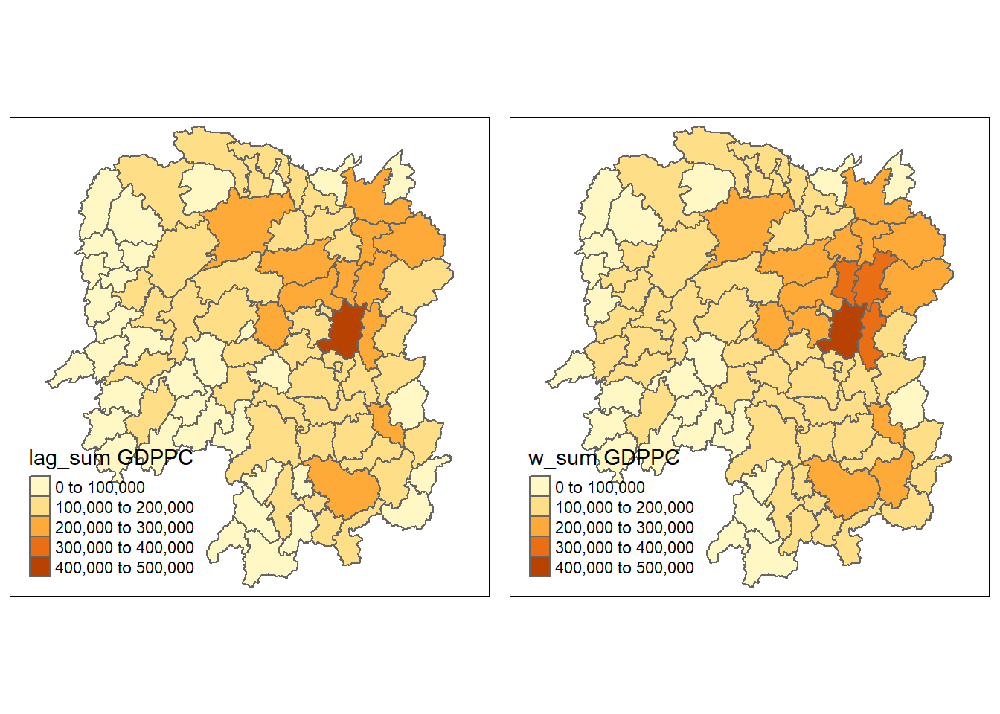
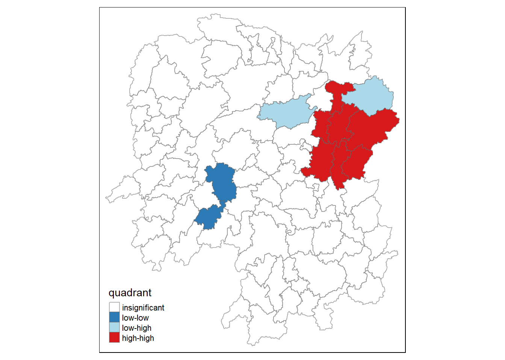

pacman::p_load(sf, spdep, tmap, tidyverse, knitr)Hands-On Ex 2
Overview
In this hands-on exercise, we will learn how to compute spatial weights using R. By the end to this hands-on exercise, we will be able to:
import geospatial data using appropriate function(s) of sf package,
import csv file using appropriate function of readr package,
perform relational join using appropriate join function of dplyr package,
compute spatial weights using appropriate functions of spdep package, and
calculate spatially lagged variables using appropriate functions of spdep package
In the second part -
We will learn how to compute Global and Local Measure of Spatial Autocorrelation (GLSA) by using spdep package. By the end to this hands-on exercise, we will be able to:
compute Global Spatial Autocorrelation (GSA) statistics by using appropriate functions of spdep package,
plot Moran scatterplot,
compute and plot spatial correlogram using appropriate function of spdep package.
compute Local Indicator of Spatial Association (LISA) statistics for detecting clusters and outliers by using appropriate functions spdep package;
compute Getis-Ord’s Gi-statistics for detecting hot spot or/and cold spot area by using appropriate functions of spdep package; and
to visualise the analysis output by using tmap package.
The Study Area and Data
Our task in this study, hence, is to apply appropriate spatial statistical methods to discover if development are even distributed geographically. If the answer is No. Then, our next question will be “is there sign of spatial clustering?”. And, if the answer for this question is yes, then our next question will be “where are these clusters?”
We will be using the following data sets:
Geospatial Data: Hunan County Boundary Layer
Aspatial Data: Hunan’s local development indicators in 2012. Hunan_2012.csv
Loading the Packages
We will be using the following packages for this exercise:
New package for this exercise - spdep
The spdep package is a collection of functions for spatial data analysis in R. It provides tools for creating spatial weights matrices, performing spatial autocorrelation tests, and fitting spatial regression models. The package is widely used in a variety of fields, including geography, economics, and ecology.
Getting the data ready
First - we will import the data.
We will start with the geospatial data - Hunan county, which is in ESRI shapefile format.
hunan <- st_read(dsn = "data/geospatial",
layer = "Hunan")Reading layer `Hunan' from data source
`C:\zjjgithubb\ISSS624\HandsOnEx\HandsOnEx2\data\geospatial'
using driver `ESRI Shapefile'
Simple feature collection with 88 features and 7 fields
Geometry type: POLYGON
Dimension: XY
Bounding box: xmin: 108.7831 ymin: 24.6342 xmax: 114.2544 ymax: 30.12812
Geodetic CRS: WGS 84Next, we will import the aspatial data using the readr package.
hunan2012 <- read_csv("data/aspatial/Hunan_2012.csv")Quick check on the data to learn more about the data. It lists the County name and the various indicators.
head(hunan2012)# A tibble: 6 x 29
County City avg_wage deposite FAI Gov_Rev Gov_Exp GDP GDPPC GIO Loan
<chr> <chr> <dbl> <dbl> <dbl> <dbl> <dbl> <dbl> <dbl> <dbl> <dbl>
1 Anhua Yiya~ 30544 10967 6832. 457. 2703 13225 14567 9277. 3955.
2 Anren Chen~ 28058 4599. 6386. 221. 1455. 4941. 12761 4189. 2555.
3 Anxia~ Chan~ 31935 5517. 3541 244. 1780. 12482 23667 5109. 2807.
4 Baoji~ Huna~ 30843 2250 1005. 193. 1379. 4088. 14563 3624. 1254.
5 Chali~ Zhuz~ 31251 8241. 6508. 620. 1947 11585 20078 9158. 4287.
6 Chang~ Heng~ 28518 10860 7920 770. 2632. 19886 24418 37392 4243.
# i 18 more variables: NIPCR <dbl>, Bed <dbl>, Emp <dbl>, EmpR <dbl>,
# EmpRT <dbl>, Pri_Stu <dbl>, Sec_Stu <dbl>, Household <dbl>,
# Household_R <dbl>, NOIP <dbl>, Pop_R <dbl>, RSCG <dbl>, Pop_T <dbl>,
# Agri <dbl>, Service <dbl>, Disp_Inc <dbl>, RORP <dbl>, ROREmp <dbl>Performing relational join
We will update the attribute table update the attribute table of hunan’s SpatialPolygonsDataFrame with the attribute fields of hunan2012 dataframe. This is performed by using left_join() of dplyr package.
hunan <- left_join(hunan,hunan2012)%>%
select(1:4, 7, 15)left_join(hunan, hunan2012): This line performs a left join between the data frameshunanandhunan2012. The left join includes all rows from thehunandata frame and the matching rows from thehunan2012data frame based on a common key or keys. The result is a data frame with columns from both data frames.%>%: The pipe operator (%>%) is used to pass the result of the left join to the next operation.select(1:4, 7, 15): This line selects specific columns from the joined data frame. Columns 1 through 4, column 7, and column 15 are retained in the final data frame, and the rest are dropped.
Visualising the Data - Regional Development Indicator
We will prepare a base map and a choropleth map showing the distribution of GDPPC 2012 by using qtm() of tmap package.
basemap <- tm_shape(hunan) +
tm_polygons() +
tm_text("NAME_3", size=0.5)
gdppc <- qtm(hunan, "GDPPC")
tmap_arrange(basemap, gdppc, asp=1, ncol=2)
equal <- tm_shape(hunan) +
tm_fill("GDPPC",
n = 5,
style = "equal") +
tm_borders(alpha = 0.5) +
tm_layout(main.title = "Equal interval classification")
quantile <- tm_shape(hunan) +
tm_fill("GDPPC",
n = 5,
style = "quantile") +
tm_borders(alpha = 0.5) +
tm_layout(main.title = "Equal quantile classification")
tmap_arrange(equal,
quantile,
asp=1,
ncol=2)
Computing Contiguity Spatial Weights
Overview of Contiguity Spatial Weights
In spatial analysis, contiguity spatial weights represent the connections or relationships between spatial units, such as regions, countries, or points on a map. These weights are typically constructed based on the geometric proximity of the units, indicating whether they share a common border or are within a certain distance of each other. The specific type of contiguity used depends on the research question and the nature of the data.
Types of Contiguity Spatial Weights
There are two main types of contiguity spatial weights:
Rook contiguity: Units are considered neighbors if they share a common edge.
Queen contiguity: Units are considered neighbors if they share a common edge or vertex.
These two types of contiguity differ in how they define connectivity. Rook contiguity is more restrictive, while queen contiguity is more inclusive. The choice of contiguity weight depends on the specific application and the research question.
Applications of Contiguity Spatial Weights
Contiguity spatial weights are used in various spatial analysis applications, including:
Spatial autocorrelation analysis: Identifying patterns of similarity or dissimilarity in spatial data.
Spatial regression modeling: Accounting for spatial dependence in statistical models.
Spatial interpolation: Estimating values at unsampled locations based on surrounding values.
Spatial diffusion modeling: Analyzing the spread of phenomena over space and time.
Construction of Contiguity Spatial Weights
Contiguity spatial weights are typically constructed using spatial data structures and algorithms. These tools allow for efficient and accurate identification of neighbors based on geometric proximity. The specific construction method depends on the type of spatial data (polygons, points, lines) and the type of contiguity (rook or queen).
Normalization of Contiguity Spatial Weights
Contiguity spatial weights are often normalized to ensure that they are comparable across different spatial units and studies. Normalization methods can involve row-standardization, column-standardization, or other techniques.
Importance of Contiguity Spatial Weights
Contiguity spatial weights play a crucial role in spatial analysis by providing a formal representation of spatial relationships between units. They allow researchers to incorporate spatial dependence into statistical models and analyze the impact of spatial context on various phenomena.
Compute QUEEN contiguity based neighbours
Computing the Queen contiguity weight matrix.
wm_q <- poly2nb(hunan, queen=TRUE)
summary(wm_q)Neighbour list object:
Number of regions: 88
Number of nonzero links: 448
Percentage nonzero weights: 5.785124
Average number of links: 5.090909
Link number distribution:
1 2 3 4 5 6 7 8 9 11
2 2 12 16 24 14 11 4 2 1
2 least connected regions:
30 65 with 1 link
1 most connected region:
85 with 11 linksThe summary report above shows that there are 88 area units in Hunan. The most connected area unit has 11 neighbours. There are two area units with only one heighbours.
For each polygon in our polygon object, wm_q lists all neighboring polygons. For example, to see the neighbors for the first polygon in the object, type:
wm_q[[1]][1] 2 3 4 57 85Polygon 1 has 5 neighbors. The numbers represent the polygon IDs as stored in hunan SpatialPolygonsDataFrame class.
We can retrive the county name of Polygon ID=1 by using the code chunk below:
hunan$County[1][1] "Anxiang"The output reveals that Polygon ID=1 is Anxiang county.
To reveal the county names of the five neighboring polygons, the code chunk will be used:
hunan$NAME_3[c(2,3,4,57,85)][1] "Hanshou" "Jinshi" "Li" "Nan" "Taoyuan"We can retrieve the GDPPC of these five countries by using the code chunk below.
nb1 <- wm_q[[1]]
nb1 <- hunan$GDPPC[nb1]
nb1[1] 20981 34592 24473 21311 22879The printed output above shows that the GDPPC of the five nearest neighbours based on Queen’s method are 20981, 34592, 24473, 21311 and 22879 respectively.
We can display the complete weight matrix by using str().
str(wm_q)List of 88
$ : int [1:5] 2 3 4 57 85
$ : int [1:5] 1 57 58 78 85
$ : int [1:4] 1 4 5 85
$ : int [1:4] 1 3 5 6
$ : int [1:4] 3 4 6 85
$ : int [1:5] 4 5 69 75 85
$ : int [1:4] 67 71 74 84
$ : int [1:7] 9 46 47 56 78 80 86
$ : int [1:6] 8 66 68 78 84 86
$ : int [1:8] 16 17 19 20 22 70 72 73
$ : int [1:3] 14 17 72
$ : int [1:5] 13 60 61 63 83
$ : int [1:4] 12 15 60 83
$ : int [1:3] 11 15 17
$ : int [1:4] 13 14 17 83
$ : int [1:5] 10 17 22 72 83
$ : int [1:7] 10 11 14 15 16 72 83
$ : int [1:5] 20 22 23 77 83
$ : int [1:6] 10 20 21 73 74 86
$ : int [1:7] 10 18 19 21 22 23 82
$ : int [1:5] 19 20 35 82 86
$ : int [1:5] 10 16 18 20 83
$ : int [1:7] 18 20 38 41 77 79 82
$ : int [1:5] 25 28 31 32 54
$ : int [1:5] 24 28 31 33 81
$ : int [1:4] 27 33 42 81
$ : int [1:3] 26 29 42
$ : int [1:5] 24 25 33 49 54
$ : int [1:3] 27 37 42
$ : int 33
$ : int [1:8] 24 25 32 36 39 40 56 81
$ : int [1:8] 24 31 50 54 55 56 75 85
$ : int [1:5] 25 26 28 30 81
$ : int [1:3] 36 45 80
$ : int [1:6] 21 41 47 80 82 86
$ : int [1:6] 31 34 40 45 56 80
$ : int [1:4] 29 42 43 44
$ : int [1:4] 23 44 77 79
$ : int [1:5] 31 40 42 43 81
$ : int [1:6] 31 36 39 43 45 79
$ : int [1:6] 23 35 45 79 80 82
$ : int [1:7] 26 27 29 37 39 43 81
$ : int [1:6] 37 39 40 42 44 79
$ : int [1:4] 37 38 43 79
$ : int [1:6] 34 36 40 41 79 80
$ : int [1:3] 8 47 86
$ : int [1:5] 8 35 46 80 86
$ : int [1:5] 50 51 52 53 55
$ : int [1:4] 28 51 52 54
$ : int [1:5] 32 48 52 54 55
$ : int [1:3] 48 49 52
$ : int [1:5] 48 49 50 51 54
$ : int [1:3] 48 55 75
$ : int [1:6] 24 28 32 49 50 52
$ : int [1:5] 32 48 50 53 75
$ : int [1:7] 8 31 32 36 78 80 85
$ : int [1:6] 1 2 58 64 76 85
$ : int [1:5] 2 57 68 76 78
$ : int [1:4] 60 61 87 88
$ : int [1:4] 12 13 59 61
$ : int [1:7] 12 59 60 62 63 77 87
$ : int [1:3] 61 77 87
$ : int [1:4] 12 61 77 83
$ : int [1:2] 57 76
$ : int 76
$ : int [1:5] 9 67 68 76 84
$ : int [1:4] 7 66 76 84
$ : int [1:5] 9 58 66 76 78
$ : int [1:3] 6 75 85
$ : int [1:3] 10 72 73
$ : int [1:3] 7 73 74
$ : int [1:5] 10 11 16 17 70
$ : int [1:5] 10 19 70 71 74
$ : int [1:6] 7 19 71 73 84 86
$ : int [1:6] 6 32 53 55 69 85
$ : int [1:7] 57 58 64 65 66 67 68
$ : int [1:7] 18 23 38 61 62 63 83
$ : int [1:7] 2 8 9 56 58 68 85
$ : int [1:7] 23 38 40 41 43 44 45
$ : int [1:8] 8 34 35 36 41 45 47 56
$ : int [1:6] 25 26 31 33 39 42
$ : int [1:5] 20 21 23 35 41
$ : int [1:9] 12 13 15 16 17 18 22 63 77
$ : int [1:6] 7 9 66 67 74 86
$ : int [1:11] 1 2 3 5 6 32 56 57 69 75 ...
$ : int [1:9] 8 9 19 21 35 46 47 74 84
$ : int [1:4] 59 61 62 88
$ : int [1:2] 59 87
- attr(*, "class")= chr "nb"
- attr(*, "region.id")= chr [1:88] "1" "2" "3" "4" ...
- attr(*, "call")= language poly2nb(pl = hunan, queen = TRUE)
- attr(*, "type")= chr "queen"
- attr(*, "sym")= logi TRUEComputing ROOK contiguity based neighbours
The code chunk below is used to compute Rook contiguity weight matrix.
wm_r <- poly2nb(hunan, queen=FALSE)
summary(wm_r)Neighbour list object:
Number of regions: 88
Number of nonzero links: 440
Percentage nonzero weights: 5.681818
Average number of links: 5
Link number distribution:
1 2 3 4 5 6 7 8 9 10
2 2 12 20 21 14 11 3 2 1
2 least connected regions:
30 65 with 1 link
1 most connected region:
85 with 10 linksThe summary report above shows that there are 88 area units in Hunan. The most connect area unit has 10 neighbours. There are two area units with only one neighbours.
Visualising contiguity weights
A connectivity graph takes a point and displays a line to each neighboring point. We are working with polygons at the moment, so we will need to get points in order to make our connectivity graphs. The most typically method for this will be polygon centroids. We will calculate these in the sf package before moving onto the graphs. Getting Latitude and Longitude of Polygon Centroids
We will need points to associate with each polygon before we can make our connectivity graph. It will be a little more complicated than just running st_centroid on the sf object: us.bound. We need the coordinates in a separate data frame for this to work. To do this we will use a mapping function. The mapping function applies a given function to each element of a vector and returns a vector of the same length. Our input vector will be the geometry column of us.bound. Our function will be st_centroid. We will be using map_dbl variation of map from the purrr package. For more documentation, check out map documentation
To get our longitude values we map the st_centroid function over the geometry column of us.bound and access the longitude value through double bracket notation [[]] and 1. This allows us to get only the longitude, which is the first value in each centroid.
longitude <- map_dbl(hunan$geometry, ~st_centroid(.x)[[1]])We do the same for latitude with one key difference. We access the second value per each centroid with [[2]].
latitude <- map_dbl(hunan$geometry, ~st_centroid(.x)[[2]])Now that we have latitude and longitude, we use cbind to put longitude and latitude into the same object.
coords <- cbind(longitude, latitude)We check to see if things are formatted correctly.
head(coords) longitude latitude
[1,] 112.1531 29.44362
[2,] 112.0372 28.86489
[3,] 111.8917 29.47107
[4,] 111.7031 29.74499
[5,] 111.6138 29.49258
[6,] 111.0341 29.79863Plotting QUEEN map
plot(hunan$geometry, border="lightgrey")
plot(wm_q, coords, pch = 19, cex = 0.6, add = TRUE, col= "red")
Plotting ROOK map
plot(hunan$geometry, border="lightgrey")
plot(wm_r, coords, pch = 19, cex = 0.6, add = TRUE, col = "red")
Plotting both QUEEN and ROOK maps
par(mfrow=c(1,2))
plot(hunan$geometry, border="lightgrey", main="Queen Contiguity")
plot(wm_q, coords, pch = 19, cex = 0.6, add = TRUE, col= "red")
plot(hunan$geometry, border="lightgrey", main="Rook Contiguity")
plot(wm_r, coords, pch = 19, cex = 0.6, add = TRUE, col = "red")
Computing distance based neighbours
In this section, you will learn how to derive distance-based weight matrices by using dnearneigh() of spdep package.
The function identifies neighbours of region points by Euclidean distance with a distance band with lower d1= and upper d2= bounds controlled by the bounds= argument. If unprojected coordinates are used and either specified in the coordinates object x or with x as a two column matrix and longlat=TRUE, great circle distances in km will be calculated assuming the WGS84 reference ellipsoid.
Determine the cut-off distance
Firstly, we need to determine the upper limit for distance band by using the steps below:
Return a matrix with the indices of points belonging to the set of the k nearest neighbours of each other by using knearneigh() of spdep.
Convert the knn object returned by knearneigh() into a neighbours list of class nb with a list of integer vectors containing neighbour region number ids by using knn2nb().
Return the length of neighbour relationship edges by using nbdists() of spdep. The function returns in the units of the coordinates if the coordinates are projected, in km otherwise.
Remove the list structure of the returned object by using unlist().
#coords <- coordinates(hunan)
k1 <- knn2nb(knearneigh(coords))
k1dists <- unlist(nbdists(k1, coords, longlat = TRUE))
summary(k1dists) Min. 1st Qu. Median Mean 3rd Qu. Max.
24.79 32.57 38.01 39.07 44.52 61.79 The summary report shows that the largest first nearest neighbour distance is 61.79 km, so using this as the upper threshold gives certainty that all units will have at least one neighbour.
Computing fixed distance weight matrix
Now, we will compute the distance weight matrix by using dnearneigh() as shown in the code chunk below.
dnearneigh(your_spatial_data, d1 = distance_threshold, longlat = FALSE) - dnearneigh: This function from the spdep package creates a neighbors list based on a specified distance threshold (d1). The longlat parameter is set to FALSE because it assumes the data is in planar coordinates. But we are using longlat so it is set to TRUE.
wm_d62 <- dnearneigh(coords, 0, 62, longlat = TRUE)
wm_d62Neighbour list object:
Number of regions: 88
Number of nonzero links: 324
Percentage nonzero weights: 4.183884
Average number of links: 3.681818 Number of regions: There are 88 regions in your spatial data.
Number of nonzero links: The total number of links or connections between regions is 324.
Percentage nonzero weights: This is the percentage of nonzero weights in the spatial weights matrix. In your case, it’s 4.183884%, indicating that a small percentage of all possible pairwise connections have been defined as neighbors.
Average number of links: On average, each region has approximately 3.68 links or neighbors.
Next, we will use str() to display the content of wm_d62 weight matrix.
str(wm_d62)List of 88
$ : int [1:5] 3 4 5 57 64
$ : int [1:4] 57 58 78 85
$ : int [1:4] 1 4 5 57
$ : int [1:3] 1 3 5
$ : int [1:4] 1 3 4 85
$ : int 69
$ : int [1:2] 67 84
$ : int [1:4] 9 46 47 78
$ : int [1:4] 8 46 68 84
$ : int [1:4] 16 22 70 72
$ : int [1:3] 14 17 72
$ : int [1:5] 13 60 61 63 83
$ : int [1:4] 12 15 60 83
$ : int [1:2] 11 17
$ : int 13
$ : int [1:4] 10 17 22 83
$ : int [1:3] 11 14 16
$ : int [1:3] 20 22 63
$ : int [1:5] 20 21 73 74 82
$ : int [1:5] 18 19 21 22 82
$ : int [1:6] 19 20 35 74 82 86
$ : int [1:4] 10 16 18 20
$ : int [1:3] 41 77 82
$ : int [1:4] 25 28 31 54
$ : int [1:4] 24 28 33 81
$ : int [1:4] 27 33 42 81
$ : int [1:2] 26 29
$ : int [1:6] 24 25 33 49 52 54
$ : int [1:2] 27 37
$ : int 33
$ : int [1:2] 24 36
$ : int 50
$ : int [1:5] 25 26 28 30 81
$ : int [1:3] 36 45 80
$ : int [1:6] 21 41 46 47 80 82
$ : int [1:5] 31 34 45 56 80
$ : int [1:2] 29 42
$ : int [1:3] 44 77 79
$ : int [1:4] 40 42 43 81
$ : int [1:3] 39 45 79
$ : int [1:5] 23 35 45 79 82
$ : int [1:5] 26 37 39 43 81
$ : int [1:3] 39 42 44
$ : int [1:2] 38 43
$ : int [1:6] 34 36 40 41 79 80
$ : int [1:5] 8 9 35 47 86
$ : int [1:5] 8 35 46 80 86
$ : int [1:5] 50 51 52 53 55
$ : int [1:4] 28 51 52 54
$ : int [1:6] 32 48 51 52 54 55
$ : int [1:4] 48 49 50 52
$ : int [1:6] 28 48 49 50 51 54
$ : int [1:2] 48 55
$ : int [1:5] 24 28 49 50 52
$ : int [1:4] 48 50 53 75
$ : int 36
$ : int [1:5] 1 2 3 58 64
$ : int [1:5] 2 57 64 66 68
$ : int [1:3] 60 87 88
$ : int [1:4] 12 13 59 61
$ : int [1:5] 12 60 62 63 87
$ : int [1:4] 61 63 77 87
$ : int [1:5] 12 18 61 62 83
$ : int [1:4] 1 57 58 76
$ : int 76
$ : int [1:5] 58 67 68 76 84
$ : int [1:2] 7 66
$ : int [1:4] 9 58 66 84
$ : int [1:2] 6 75
$ : int [1:3] 10 72 73
$ : int [1:2] 73 74
$ : int [1:3] 10 11 70
$ : int [1:4] 19 70 71 74
$ : int [1:5] 19 21 71 73 86
$ : int [1:2] 55 69
$ : int [1:3] 64 65 66
$ : int [1:3] 23 38 62
$ : int [1:2] 2 8
$ : int [1:4] 38 40 41 45
$ : int [1:5] 34 35 36 45 47
$ : int [1:5] 25 26 33 39 42
$ : int [1:6] 19 20 21 23 35 41
$ : int [1:4] 12 13 16 63
$ : int [1:4] 7 9 66 68
$ : int [1:2] 2 5
$ : int [1:4] 21 46 47 74
$ : int [1:4] 59 61 62 88
$ : int [1:2] 59 87
- attr(*, "class")= chr "nb"
- attr(*, "region.id")= chr [1:88] "1" "2" "3" "4" ...
- attr(*, "call")= language dnearneigh(x = coords, d1 = 0, d2 = 62, longlat = TRUE)
- attr(*, "dnn")= num [1:2] 0 62
- attr(*, "bounds")= chr [1:2] "GE" "LE"
- attr(*, "nbtype")= chr "distance"
- attr(*, "sym")= logi TRUEAnother way to display the structure of the weight matrix is to combine table() and card() of spdep.
table(hunan$County, card(wm_d62))
1 2 3 4 5 6
Anhua 1 0 0 0 0 0
Anren 0 0 0 1 0 0
Anxiang 0 0 0 0 1 0
Baojing 0 0 0 0 1 0
Chaling 0 0 1 0 0 0
Changning 0 0 1 0 0 0
Changsha 0 0 0 1 0 0
Chengbu 0 1 0 0 0 0
Chenxi 0 0 0 1 0 0
Cili 0 1 0 0 0 0
Dao 0 0 0 1 0 0
Dongan 0 0 1 0 0 0
Dongkou 0 0 0 1 0 0
Fenghuang 0 0 0 1 0 0
Guidong 0 0 1 0 0 0
Guiyang 0 0 0 1 0 0
Guzhang 0 0 0 0 0 1
Hanshou 0 0 0 1 0 0
Hengdong 0 0 0 0 1 0
Hengnan 0 0 0 0 1 0
Hengshan 0 0 0 0 0 1
Hengyang 0 0 0 0 0 1
Hongjiang 0 0 0 0 1 0
Huarong 0 0 0 1 0 0
Huayuan 0 0 0 1 0 0
Huitong 0 0 0 1 0 0
Jiahe 0 0 0 0 1 0
Jianghua 0 0 1 0 0 0
Jiangyong 0 1 0 0 0 0
Jingzhou 0 1 0 0 0 0
Jinshi 0 0 0 1 0 0
Jishou 0 0 0 0 0 1
Lanshan 0 0 0 1 0 0
Leiyang 0 0 0 1 0 0
Lengshuijiang 0 0 1 0 0 0
Li 0 0 1 0 0 0
Lianyuan 0 0 0 0 1 0
Liling 0 1 0 0 0 0
Linli 0 0 0 1 0 0
Linwu 0 0 0 1 0 0
Linxiang 1 0 0 0 0 0
Liuyang 0 1 0 0 0 0
Longhui 0 0 1 0 0 0
Longshan 0 1 0 0 0 0
Luxi 0 0 0 0 1 0
Mayang 0 0 0 0 0 1
Miluo 0 0 0 0 1 0
Nan 0 0 0 0 1 0
Ningxiang 0 0 0 1 0 0
Ningyuan 0 0 0 0 1 0
Pingjiang 0 1 0 0 0 0
Qidong 0 0 1 0 0 0
Qiyang 0 0 1 0 0 0
Rucheng 0 1 0 0 0 0
Sangzhi 0 1 0 0 0 0
Shaodong 0 0 0 0 1 0
Shaoshan 0 0 0 0 1 0
Shaoyang 0 0 0 1 0 0
Shimen 1 0 0 0 0 0
Shuangfeng 0 0 0 0 0 1
Shuangpai 0 0 0 1 0 0
Suining 0 0 0 0 1 0
Taojiang 0 1 0 0 0 0
Taoyuan 0 1 0 0 0 0
Tongdao 0 1 0 0 0 0
Wangcheng 0 0 0 1 0 0
Wugang 0 0 1 0 0 0
Xiangtan 0 0 0 1 0 0
Xiangxiang 0 0 0 0 1 0
Xiangyin 0 0 0 1 0 0
Xinhua 0 0 0 0 1 0
Xinhuang 1 0 0 0 0 0
Xinning 0 1 0 0 0 0
Xinshao 0 0 0 0 0 1
Xintian 0 0 0 0 1 0
Xupu 0 1 0 0 0 0
Yanling 0 0 1 0 0 0
Yizhang 1 0 0 0 0 0
Yongshun 0 0 0 1 0 0
Yongxing 0 0 0 1 0 0
You 0 0 0 1 0 0
Yuanjiang 0 0 0 0 1 0
Yuanling 1 0 0 0 0 0
Yueyang 0 0 1 0 0 0
Zhijiang 0 0 0 0 1 0
Zhongfang 0 0 0 1 0 0
Zhuzhou 0 0 0 0 1 0
Zixing 0 0 1 0 0 0n_comp <- n.comp.nb(wm_d62)
n_comp$nc[1] 1table(n_comp$comp.id)
1
88 Plotting fixed distance weight matrix
Next - we will plot the data onto the map.
plot(hunan$geometry, border="lightgrey")
plot(wm_d62, coords, add=TRUE)
plot(k1, coords, add=TRUE, col="red", length=0.08)
The red lines show the links of 1st nearest neighbours and the black lines show the links of neighbours within the cut-off distance of 62km.
Alternatively, we can plot both of them next to each other by using the code chunk below.
par(mfrow=c(1,2))
plot(hunan$geometry, border="lightgrey", main="1st nearest neighbours")
plot(k1, coords, add=TRUE, col="red", length=0.08)
plot(hunan$geometry, border="lightgrey", main="Distance link")
plot(wm_d62, coords, add=TRUE, pch = 19, cex = 0.6)
Computing adaptive distance weight matrix
One of the characteristics of fixed distance weight matrix is that more densely settled areas (usually the urban areas) tend to have more neighbours and the less densely settled areas (usually the rural counties) tend to have lesser neighbours. Having many neighbours smoothes the neighbour relationship across more neighbours.
It is possible to control the numbers of neighbours directly using k-nearest neighbours, either accepting asymmetric neighbours or imposing symmetry as shown in the code chunk below.
knn2nb: This function converts a k-nearest neighbors list to a neighbor list object. It takes the output of theknearneighfunction (which calculates k-nearest neighbors) and converts it to a neighbor list suitable for spatial analysis.knearneigh(coords, k=6): This function calculates the k-nearest neighbors for a given set of coordinates (coords) with a specified value ofk(in this case,k = 6).
knn6 <- knn2nb(knearneigh(coords, k=6))
knn6Neighbour list object:
Number of regions: 88
Number of nonzero links: 528
Percentage nonzero weights: 6.818182
Average number of links: 6
Non-symmetric neighbours listSimilarly, we can display the content of the matrix by using str().
str(knn6)List of 88
$ : int [1:6] 2 3 4 5 57 64
$ : int [1:6] 1 3 57 58 78 85
$ : int [1:6] 1 2 4 5 57 85
$ : int [1:6] 1 3 5 6 69 85
$ : int [1:6] 1 3 4 6 69 85
$ : int [1:6] 3 4 5 69 75 85
$ : int [1:6] 9 66 67 71 74 84
$ : int [1:6] 9 46 47 78 80 86
$ : int [1:6] 8 46 66 68 84 86
$ : int [1:6] 16 19 22 70 72 73
$ : int [1:6] 10 14 16 17 70 72
$ : int [1:6] 13 15 60 61 63 83
$ : int [1:6] 12 15 60 61 63 83
$ : int [1:6] 11 15 16 17 72 83
$ : int [1:6] 12 13 14 17 60 83
$ : int [1:6] 10 11 17 22 72 83
$ : int [1:6] 10 11 14 16 72 83
$ : int [1:6] 20 22 23 63 77 83
$ : int [1:6] 10 20 21 73 74 82
$ : int [1:6] 18 19 21 22 23 82
$ : int [1:6] 19 20 35 74 82 86
$ : int [1:6] 10 16 18 19 20 83
$ : int [1:6] 18 20 41 77 79 82
$ : int [1:6] 25 28 31 52 54 81
$ : int [1:6] 24 28 31 33 54 81
$ : int [1:6] 25 27 29 33 42 81
$ : int [1:6] 26 29 30 37 42 81
$ : int [1:6] 24 25 33 49 52 54
$ : int [1:6] 26 27 37 42 43 81
$ : int [1:6] 26 27 28 33 49 81
$ : int [1:6] 24 25 36 39 40 54
$ : int [1:6] 24 31 50 54 55 56
$ : int [1:6] 25 26 28 30 49 81
$ : int [1:6] 36 40 41 45 56 80
$ : int [1:6] 21 41 46 47 80 82
$ : int [1:6] 31 34 40 45 56 80
$ : int [1:6] 26 27 29 42 43 44
$ : int [1:6] 23 43 44 62 77 79
$ : int [1:6] 25 40 42 43 44 81
$ : int [1:6] 31 36 39 43 45 79
$ : int [1:6] 23 35 45 79 80 82
$ : int [1:6] 26 27 37 39 43 81
$ : int [1:6] 37 39 40 42 44 79
$ : int [1:6] 37 38 39 42 43 79
$ : int [1:6] 34 36 40 41 79 80
$ : int [1:6] 8 9 35 47 78 86
$ : int [1:6] 8 21 35 46 80 86
$ : int [1:6] 49 50 51 52 53 55
$ : int [1:6] 28 33 48 51 52 54
$ : int [1:6] 32 48 51 52 54 55
$ : int [1:6] 28 48 49 50 52 54
$ : int [1:6] 28 48 49 50 51 54
$ : int [1:6] 48 50 51 52 55 75
$ : int [1:6] 24 28 49 50 51 52
$ : int [1:6] 32 48 50 52 53 75
$ : int [1:6] 32 34 36 78 80 85
$ : int [1:6] 1 2 3 58 64 68
$ : int [1:6] 2 57 64 66 68 78
$ : int [1:6] 12 13 60 61 87 88
$ : int [1:6] 12 13 59 61 63 87
$ : int [1:6] 12 13 60 62 63 87
$ : int [1:6] 12 38 61 63 77 87
$ : int [1:6] 12 18 60 61 62 83
$ : int [1:6] 1 3 57 58 68 76
$ : int [1:6] 58 64 66 67 68 76
$ : int [1:6] 9 58 67 68 76 84
$ : int [1:6] 7 65 66 68 76 84
$ : int [1:6] 9 57 58 66 78 84
$ : int [1:6] 4 5 6 32 75 85
$ : int [1:6] 10 16 19 22 72 73
$ : int [1:6] 7 19 73 74 84 86
$ : int [1:6] 10 11 14 16 17 70
$ : int [1:6] 10 19 21 70 71 74
$ : int [1:6] 19 21 71 73 84 86
$ : int [1:6] 6 32 50 53 55 69
$ : int [1:6] 58 64 65 66 67 68
$ : int [1:6] 18 23 38 61 62 63
$ : int [1:6] 2 8 9 46 58 68
$ : int [1:6] 38 40 41 43 44 45
$ : int [1:6] 34 35 36 41 45 47
$ : int [1:6] 25 26 28 33 39 42
$ : int [1:6] 19 20 21 23 35 41
$ : int [1:6] 12 13 15 16 22 63
$ : int [1:6] 7 9 66 68 71 74
$ : int [1:6] 2 3 4 5 56 69
$ : int [1:6] 8 9 21 46 47 74
$ : int [1:6] 59 60 61 62 63 88
$ : int [1:6] 59 60 61 62 63 87
- attr(*, "region.id")= chr [1:88] "1" "2" "3" "4" ...
- attr(*, "call")= language knearneigh(x = coords, k = 6)
- attr(*, "sym")= logi FALSE
- attr(*, "type")= chr "knn"
- attr(*, "knn-k")= num 6
- attr(*, "class")= chr "nb"Plotting distance based neighbours
plot(hunan$geometry, border="lightgrey")
plot(knn6, coords, pch = 19, cex = 0.6, add = TRUE, col = "red")
Weights based on Inverse Distance Weighting
The IDW method estimates values for unmeasured locations based on the values observed at nearby locations. The basic idea is that values at a particular location are influenced more by values at nearby locations than by those farther away.
Here’s a brief explanation of how IDW works:
Inverse Distance Weighting:
IDW assigns weights to measured values at known locations based on their distance to the location where you want to estimate a value.
The weights are typically inversely proportional to the distance from the known points. Closer points have higher weights, indicating a stronger influence on the estimated value.
Weighted Average:
- The estimated value at a specific location is calculated as a weighted average of the observed values at nearby locations, with weights determined by their inverse distances.
Power Parameter:
- IDW often includes a power parameter (p) that allows you to control the rate at which the weights decrease with distance. A higher value of p means that closer points have even more influence on the estimated value.
First, we will compute the distances between areas by using nbdists() of spdep.
dist <- nbdists(wm_q, coords, longlat = TRUE)
ids <- lapply(dist, function(x) 1/(x))
ids[[1]]
[1] 0.01535405 0.03916350 0.01820896 0.02807922 0.01145113
[[2]]
[1] 0.01535405 0.01764308 0.01925924 0.02323898 0.01719350
[[3]]
[1] 0.03916350 0.02822040 0.03695795 0.01395765
[[4]]
[1] 0.01820896 0.02822040 0.03414741 0.01539065
[[5]]
[1] 0.03695795 0.03414741 0.01524598 0.01618354
[[6]]
[1] 0.015390649 0.015245977 0.021748129 0.011883901 0.009810297
[[7]]
[1] 0.01708612 0.01473997 0.01150924 0.01872915
[[8]]
[1] 0.02022144 0.03453056 0.02529256 0.01036340 0.02284457 0.01500600 0.01515314
[[9]]
[1] 0.02022144 0.01574888 0.02109502 0.01508028 0.02902705 0.01502980
[[10]]
[1] 0.02281552 0.01387777 0.01538326 0.01346650 0.02100510 0.02631658 0.01874863
[8] 0.01500046
[[11]]
[1] 0.01882869 0.02243492 0.02247473
[[12]]
[1] 0.02779227 0.02419652 0.02333385 0.02986130 0.02335429
[[13]]
[1] 0.02779227 0.02650020 0.02670323 0.01714243
[[14]]
[1] 0.01882869 0.01233868 0.02098555
[[15]]
[1] 0.02650020 0.01233868 0.01096284 0.01562226
[[16]]
[1] 0.02281552 0.02466962 0.02765018 0.01476814 0.01671430
[[17]]
[1] 0.01387777 0.02243492 0.02098555 0.01096284 0.02466962 0.01593341 0.01437996
[[18]]
[1] 0.02039779 0.02032767 0.01481665 0.01473691 0.01459380
[[19]]
[1] 0.01538326 0.01926323 0.02668415 0.02140253 0.01613589 0.01412874
[[20]]
[1] 0.01346650 0.02039779 0.01926323 0.01723025 0.02153130 0.01469240 0.02327034
[[21]]
[1] 0.02668415 0.01723025 0.01766299 0.02644986 0.02163800
[[22]]
[1] 0.02100510 0.02765018 0.02032767 0.02153130 0.01489296
[[23]]
[1] 0.01481665 0.01469240 0.01401432 0.02246233 0.01880425 0.01530458 0.01849605
[[24]]
[1] 0.02354598 0.01837201 0.02607264 0.01220154 0.02514180
[[25]]
[1] 0.02354598 0.02188032 0.01577283 0.01949232 0.02947957
[[26]]
[1] 0.02155798 0.01745522 0.02212108 0.02220532
[[27]]
[1] 0.02155798 0.02490625 0.01562326
[[28]]
[1] 0.01837201 0.02188032 0.02229549 0.03076171 0.02039506
[[29]]
[1] 0.02490625 0.01686587 0.01395022
[[30]]
[1] 0.02090587
[[31]]
[1] 0.02607264 0.01577283 0.01219005 0.01724850 0.01229012 0.01609781 0.01139438
[8] 0.01150130
[[32]]
[1] 0.01220154 0.01219005 0.01712515 0.01340413 0.01280928 0.01198216 0.01053374
[8] 0.01065655
[[33]]
[1] 0.01949232 0.01745522 0.02229549 0.02090587 0.01979045
[[34]]
[1] 0.03113041 0.03589551 0.02882915
[[35]]
[1] 0.01766299 0.02185795 0.02616766 0.02111721 0.02108253 0.01509020
[[36]]
[1] 0.01724850 0.03113041 0.01571707 0.01860991 0.02073549 0.01680129
[[37]]
[1] 0.01686587 0.02234793 0.01510990 0.01550676
[[38]]
[1] 0.01401432 0.02407426 0.02276151 0.01719415
[[39]]
[1] 0.01229012 0.02172543 0.01711924 0.02629732 0.01896385
[[40]]
[1] 0.01609781 0.01571707 0.02172543 0.01506473 0.01987922 0.01894207
[[41]]
[1] 0.02246233 0.02185795 0.02205991 0.01912542 0.01601083 0.01742892
[[42]]
[1] 0.02212108 0.01562326 0.01395022 0.02234793 0.01711924 0.01836831 0.01683518
[[43]]
[1] 0.01510990 0.02629732 0.01506473 0.01836831 0.03112027 0.01530782
[[44]]
[1] 0.01550676 0.02407426 0.03112027 0.01486508
[[45]]
[1] 0.03589551 0.01860991 0.01987922 0.02205991 0.02107101 0.01982700
[[46]]
[1] 0.03453056 0.04033752 0.02689769
[[47]]
[1] 0.02529256 0.02616766 0.04033752 0.01949145 0.02181458
[[48]]
[1] 0.02313819 0.03370576 0.02289485 0.01630057 0.01818085
[[49]]
[1] 0.03076171 0.02138091 0.02394529 0.01990000
[[50]]
[1] 0.01712515 0.02313819 0.02551427 0.02051530 0.02187179
[[51]]
[1] 0.03370576 0.02138091 0.02873854
[[52]]
[1] 0.02289485 0.02394529 0.02551427 0.02873854 0.03516672
[[53]]
[1] 0.01630057 0.01979945 0.01253977
[[54]]
[1] 0.02514180 0.02039506 0.01340413 0.01990000 0.02051530 0.03516672
[[55]]
[1] 0.01280928 0.01818085 0.02187179 0.01979945 0.01882298
[[56]]
[1] 0.01036340 0.01139438 0.01198216 0.02073549 0.01214479 0.01362855 0.01341697
[[57]]
[1] 0.028079221 0.017643082 0.031423501 0.029114131 0.013520292 0.009903702
[[58]]
[1] 0.01925924 0.03142350 0.02722997 0.01434859 0.01567192
[[59]]
[1] 0.01696711 0.01265572 0.01667105 0.01785036
[[60]]
[1] 0.02419652 0.02670323 0.01696711 0.02343040
[[61]]
[1] 0.02333385 0.01265572 0.02343040 0.02514093 0.02790764 0.01219751 0.02362452
[[62]]
[1] 0.02514093 0.02002219 0.02110260
[[63]]
[1] 0.02986130 0.02790764 0.01407043 0.01805987
[[64]]
[1] 0.02911413 0.01689892
[[65]]
[1] 0.02471705
[[66]]
[1] 0.01574888 0.01726461 0.03068853 0.01954805 0.01810569
[[67]]
[1] 0.01708612 0.01726461 0.01349843 0.01361172
[[68]]
[1] 0.02109502 0.02722997 0.03068853 0.01406357 0.01546511
[[69]]
[1] 0.02174813 0.01645838 0.01419926
[[70]]
[1] 0.02631658 0.01963168 0.02278487
[[71]]
[1] 0.01473997 0.01838483 0.03197403
[[72]]
[1] 0.01874863 0.02247473 0.01476814 0.01593341 0.01963168
[[73]]
[1] 0.01500046 0.02140253 0.02278487 0.01838483 0.01652709
[[74]]
[1] 0.01150924 0.01613589 0.03197403 0.01652709 0.01342099 0.02864567
[[75]]
[1] 0.011883901 0.010533736 0.012539774 0.018822977 0.016458383 0.008217581
[[76]]
[1] 0.01352029 0.01434859 0.01689892 0.02471705 0.01954805 0.01349843 0.01406357
[[77]]
[1] 0.014736909 0.018804247 0.022761507 0.012197506 0.020022195 0.014070428
[7] 0.008440896
[[78]]
[1] 0.02323898 0.02284457 0.01508028 0.01214479 0.01567192 0.01546511 0.01140779
[[79]]
[1] 0.01530458 0.01719415 0.01894207 0.01912542 0.01530782 0.01486508 0.02107101
[[80]]
[1] 0.01500600 0.02882915 0.02111721 0.01680129 0.01601083 0.01982700 0.01949145
[8] 0.01362855
[[81]]
[1] 0.02947957 0.02220532 0.01150130 0.01979045 0.01896385 0.01683518
[[82]]
[1] 0.02327034 0.02644986 0.01849605 0.02108253 0.01742892
[[83]]
[1] 0.023354289 0.017142433 0.015622258 0.016714303 0.014379961 0.014593799
[7] 0.014892965 0.018059871 0.008440896
[[84]]
[1] 0.01872915 0.02902705 0.01810569 0.01361172 0.01342099 0.01297994
[[85]]
[1] 0.011451133 0.017193502 0.013957649 0.016183544 0.009810297 0.010656545
[7] 0.013416965 0.009903702 0.014199260 0.008217581 0.011407794
[[86]]
[1] 0.01515314 0.01502980 0.01412874 0.02163800 0.01509020 0.02689769 0.02181458
[8] 0.02864567 0.01297994
[[87]]
[1] 0.01667105 0.02362452 0.02110260 0.02058034
[[88]]
[1] 0.01785036 0.02058034Row-standardised weights matrix
Next, we need to assign weights to each neighboring polygon. In our case, each neighboring polygon will be assigned equal weight (style=“W”). This is accomplished by assigning the fraction 1/(#ofneighbors) to each neighboring county then summing the weighted income values. While this is the most intuitive way to summaries the neighbors’ values it has one drawback in that polygons along the edges of the study area will base their lagged values on fewer polygons thus potentially over- or under-estimating the true nature of the spatial autocorrelation in the data.
For this example, we’ll stick with the style=“W” option for simplicity’s sake but note that other more robust options are available, notably style=“B”.
rswm_q <- nb2listw(wm_q, style="W", zero.policy = TRUE)
rswm_qCharacteristics of weights list object:
Neighbour list object:
Number of regions: 88
Number of nonzero links: 448
Percentage nonzero weights: 5.785124
Average number of links: 5.090909
Weights style: W
Weights constants summary:
n nn S0 S1 S2
W 88 7744 88 37.86334 365.9147The input of nb2listw() must be an object of class nb. The syntax of the function has two major arguments, namely style and zero.poly.
style can take values “W”, “B”, “C”, “U”, “minmax” and “S”. B is the basic binary coding, W is row standardised (sums over all links to n), C is globally standardised (sums over all links to n), U is equal to C divided by the number of neighbours (sums over all links to unity), while S is the variance-stabilizing coding scheme proposed by Tiefelsdorf et al. 1999, p. 167-168 (sums over all links to n).
If zero policy is set to TRUE, weights vectors of zero length are inserted for regions without neighbour in the neighbours list. These will in turn generate lag values of zero, equivalent to the sum of products of the zero row t(rep(0, length=length(neighbours))) %*% x, for arbitrary numerical vector x of length length(neighbours). The spatially lagged value of x for the zero-neighbour region will then be zero, which may (or may not) be a sensible choice.
The zero.policy=TRUE option allows for lists of non-neighbors. This should be used with caution since the user may not be aware of missing neighbors in their dataset however, a zero.policy of FALSE would return an error.
To see the weight of the first polygon’s eight neighbors type:
rswm_q$weights[10][[1]]
[1] 0.125 0.125 0.125 0.125 0.125 0.125 0.125 0.125Each neighbor is assigned a 0.125 of the total weight. This means that when R computes the average neighboring income values, each neighbor’s income will be multiplied by 0.2 before being tallied.
Using the same method, we can also derive a row standardised distance weight matrix by using the code chunk below.
rswm_ids <- nb2listw(wm_q, glist=ids, style="B", zero.policy=TRUE)
rswm_idsCharacteristics of weights list object:
Neighbour list object:
Number of regions: 88
Number of nonzero links: 448
Percentage nonzero weights: 5.785124
Average number of links: 5.090909
Weights style: B
Weights constants summary:
n nn S0 S1 S2
B 88 7744 8.786867 0.3776535 3.8137rswm_ids$weights[1][[1]]
[1] 0.01535405 0.03916350 0.01820896 0.02807922 0.01145113summary(unlist(rswm_ids$weights)) Min. 1st Qu. Median Mean 3rd Qu. Max.
0.008218 0.015088 0.018739 0.019614 0.022823 0.040338 Application of Spatial Weight Matrix
Spatial Lag with Row-Standardized Weights:
This involves creating a new variable for each observation that represents the average or weighted average of the variable of interest in its neighboring locations.
The weights used for the spatial lag are row-standardized weights, meaning that each row of the spatial weights matrix sums to 1.
Spatial Lag as a Sum of Neighboring Values:
Instead of using row-standardized weights, this approach calculates the spatial lag as the sum of the values of the variable of interest in neighboring locations.
This is a simple summation of the neighboring values without normalization.
Spatial Window Average:
This involves creating a new variable for each observation that represents the average value of the variable of interest within a specified spatial window or neighborhood around that observation.
The window can be defined by distance, number of neighbors, or some other criterion.
Spatial Window Sum:
- Similar to the spatial window average, this creates a new variable that represents the sum of the variable of interest within a specified spatial window or neighborhood around each observation.
The choice of which spatial lag variable to use depends on the specific research question, the characteristics of your data, and the underlying assumptions of your analysis. Here’s a general guide on when to use each of the four spatial lag variables you mentioned:
- Spatial Lag with Row-Standardized Weights:
- Use Case: This is a commonly used spatial lag variable when you want to account for spatial autocorrelation and consider the average or weighted average of a variable in neighboring locations.
- Considerations: Useful when you want each observation’s influence to be normalized by its connectivity to neighbors. It is often used in spatial econometrics.
- Spatial Lag as a Sum of Neighboring Values:
- Use Case: When you are interested in capturing the cumulative impact of neighboring values on a variable, without normalizing by the number of neighbors.
- Considerations: May be appropriate when you want to emphasize the total influence of neighbors, regardless of the number of neighbors.
- Spatial Window Average:
- Use Case: Useful when you want to smooth the variable by considering the average value within a specified spatial window or neighborhood around each observation.
- Considerations: Good for capturing a local spatial pattern while reducing noise. The size of the window affects the level of smoothing.
- Spatial Window Sum:
- Use Case: When you want to emphasize the cumulative impact of the variable within a specified spatial window or neighborhood.
- Considerations: Similar to the spatial window average, but places more weight on higher values within the window. Useful when you want to capture intensity or density rather than an average.
Consider the following factors when choosing which spatial lag variable to use:
Spatial Patterns: Consider the spatial patterns in your data. Are you interested in capturing local averages, totals, or smoothing effects?
Assumptions: Think about the assumptions underlying each approach. For example, row-standardized weights normalize the influence of neighbors, while a simple sum does not.
Interpretability: Choose the variable that aligns with the interpretability of your research question. What type of spatial influence are you trying to capture?
Modeling Goals: If you’re incorporating these spatial lag variables into a regression model, consider the assumptions and requirements of the modeling technique you are using.
Experimenting with different spatial lag variables and assessing their impact on your analysis can also provide insights into which approach is most appropriate for your specific context.
Spatial lag with row-standardised weights
Finally, we’ll compute the average neighbor GDPPC value for each polygon. These values are often referred to as spatially lagged values.
GDPPC.lag <- lag.listw(rswm_q, hunan$GDPPC)
GDPPC.lag [1] 24847.20 22724.80 24143.25 27737.50 27270.25 21248.80 43747.00 33582.71
[9] 45651.17 32027.62 32671.00 20810.00 25711.50 30672.33 33457.75 31689.20
[17] 20269.00 23901.60 25126.17 21903.43 22718.60 25918.80 20307.00 20023.80
[25] 16576.80 18667.00 14394.67 19848.80 15516.33 20518.00 17572.00 15200.12
[33] 18413.80 14419.33 24094.50 22019.83 12923.50 14756.00 13869.80 12296.67
[41] 15775.17 14382.86 11566.33 13199.50 23412.00 39541.00 36186.60 16559.60
[49] 20772.50 19471.20 19827.33 15466.80 12925.67 18577.17 14943.00 24913.00
[57] 25093.00 24428.80 17003.00 21143.75 20435.00 17131.33 24569.75 23835.50
[65] 26360.00 47383.40 55157.75 37058.00 21546.67 23348.67 42323.67 28938.60
[73] 25880.80 47345.67 18711.33 29087.29 20748.29 35933.71 15439.71 29787.50
[81] 18145.00 21617.00 29203.89 41363.67 22259.09 44939.56 16902.00 16930.00We utilised the rswm_q here.
Recalled in the previous section, we retrieved the GDPPC of these five countries by using the code chunk below.
nb1 <- wm_q[[1]]
nb1 <- hunan$GDPPC[nb1]
nb1[1] 20981 34592 24473 21311 22879Question: Can you see the meaning of Spatial lag with row-standardized weights now? - We are summarising the values of hte variable in the neighbouring locations in a way that fives equal importance to each neighbour and ensured that the influence of neghbours is normalised.
We can append the spatially lag GDPPC values onto hunan sf data frame by using the code chunk below.
lag.list <- list(hunan$NAME_3, lag.listw(rswm_q, hunan$GDPPC))
lag.res <- as.data.frame(lag.list)
colnames(lag.res) <- c("NAME_3", "lag GDPPC")
hunan <- left_join(hunan,lag.res)The following table shows the average neighboring income values (stored in the Inc.lag object) for each county.
head(hunan)Simple feature collection with 6 features and 7 fields
Geometry type: POLYGON
Dimension: XY
Bounding box: xmin: 110.4922 ymin: 28.61762 xmax: 112.3013 ymax: 30.12812
Geodetic CRS: WGS 84
NAME_2 ID_3 NAME_3 ENGTYPE_3 County GDPPC lag GDPPC
1 Changde 21098 Anxiang County Anxiang 23667 24847.20
2 Changde 21100 Hanshou County Hanshou 20981 22724.80
3 Changde 21101 Jinshi County City Jinshi 34592 24143.25
4 Changde 21102 Li County Li 24473 27737.50
5 Changde 21103 Linli County Linli 25554 27270.25
6 Changde 21104 Shimen County Shimen 27137 21248.80
geometry
1 POLYGON ((112.0625 29.75523...
2 POLYGON ((112.2288 29.11684...
3 POLYGON ((111.8927 29.6013,...
4 POLYGON ((111.3731 29.94649...
5 POLYGON ((111.6324 29.76288...
6 POLYGON ((110.8825 30.11675...Next, we will plot both the GDPPC and spatial lag GDPPC for comparison using the code chunk below.
gdppc <- qtm(hunan, "GDPPC")
lag_gdppc <- qtm(hunan, "lag GDPPC")
tmap_arrange(gdppc, lag_gdppc, asp=1, ncol=2)
Spatial lag as a sum of neighbouring values
We can calculate spatial lag as a sum of neighboring values by assigning binary weights. This requires us to go back to our neighbors list, then apply a function that will assign binary weights, then we use glist = in the nb2listw function to explicitly assign these weights.
We start by applying a function that will assign a value of 1 per each neighbor. This is done with lapply, which we have been using to manipulate the neighbors structure throughout the past notebooks. Basically it applies a function across each value in the neighbors structure.
b_weights <- lapply(wm_q, function(x) 0*x + 1)
b_weights2 <- nb2listw(wm_q,
glist = b_weights,
style = "B")
b_weights2Characteristics of weights list object:
Neighbour list object:
Number of regions: 88
Number of nonzero links: 448
Percentage nonzero weights: 5.785124
Average number of links: 5.090909
Weights style: B
Weights constants summary:
n nn S0 S1 S2
B 88 7744 448 896 10224With the proper weights assigned, we can use lag.listw to compute a lag variable from our weight and GDPPC.
lag_sum <- list(hunan$NAME_3, lag.listw(b_weights2, hunan$GDPPC))
lag.res <- as.data.frame(lag_sum)
colnames(lag.res) <- c("NAME_3", "lag_sum GDPPC")Examine the result.
lag_sum[[1]]
[1] "Anxiang" "Hanshou" "Jinshi" "Li"
[5] "Linli" "Shimen" "Liuyang" "Ningxiang"
[9] "Wangcheng" "Anren" "Guidong" "Jiahe"
[13] "Linwu" "Rucheng" "Yizhang" "Yongxing"
[17] "Zixing" "Changning" "Hengdong" "Hengnan"
[21] "Hengshan" "Leiyang" "Qidong" "Chenxi"
[25] "Zhongfang" "Huitong" "Jingzhou" "Mayang"
[29] "Tongdao" "Xinhuang" "Xupu" "Yuanling"
[33] "Zhijiang" "Lengshuijiang" "Shuangfeng" "Xinhua"
[37] "Chengbu" "Dongan" "Dongkou" "Longhui"
[41] "Shaodong" "Suining" "Wugang" "Xinning"
[45] "Xinshao" "Shaoshan" "Xiangxiang" "Baojing"
[49] "Fenghuang" "Guzhang" "Huayuan" "Jishou"
[53] "Longshan" "Luxi" "Yongshun" "Anhua"
[57] "Nan" "Yuanjiang" "Jianghua" "Lanshan"
[61] "Ningyuan" "Shuangpai" "Xintian" "Huarong"
[65] "Linxiang" "Miluo" "Pingjiang" "Xiangyin"
[69] "Cili" "Chaling" "Liling" "Yanling"
[73] "You" "Zhuzhou" "Sangzhi" "Yueyang"
[77] "Qiyang" "Taojiang" "Shaoyang" "Lianyuan"
[81] "Hongjiang" "Hengyang" "Guiyang" "Changsha"
[85] "Taoyuan" "Xiangtan" "Dao" "Jiangyong"
[[2]]
[1] 124236 113624 96573 110950 109081 106244 174988 235079 273907 256221
[11] 98013 104050 102846 92017 133831 158446 141883 119508 150757 153324
[21] 113593 129594 142149 100119 82884 74668 43184 99244 46549 20518
[31] 140576 121601 92069 43258 144567 132119 51694 59024 69349 73780
[41] 94651 100680 69398 52798 140472 118623 180933 82798 83090 97356
[51] 59482 77334 38777 111463 74715 174391 150558 122144 68012 84575
[61] 143045 51394 98279 47671 26360 236917 220631 185290 64640 70046
[71] 126971 144693 129404 284074 112268 203611 145238 251536 108078 238300
[81] 108870 108085 262835 248182 244850 404456 67608 33860Question: Can you understand the meaning of Spatial lag as a sum of neighboring values now? a simple summation of the neighbouring values without normalisation.
Next, we will append the lag_sum GDPPC field into hunan sf data frame by using the code chunk below.
hunan <- left_join(hunan, lag.res)Now, We can plot both the GDPPC and Spatial Lag Sum GDPPC for comparison using the code chunk below.
gdppc <- qtm(hunan, "GDPPC")
lag_sum_gdppc <- qtm(hunan, "lag_sum GDPPC")
tmap_arrange(gdppc, lag_sum_gdppc, asp=1, ncol=2)
Spatial window average
The spatial window average uses row-standardized weights and includes the diagonal element. To do this in R, we need to go back to the neighbors structure and add the diagonal element before assigning weights.
To add the diagonal element to the neighbour list, we just need to use include.self() from spdep.
wm_qs <- include.self(wm_q)Notice that the Number of nonzero links, Percentage nonzero weights and Average number of links are 536, 6.921488 and 6.090909 respectively as compared to wm_q of 448, 5.785124 and 5.090909
Let us take a good look at the neighbour list of area [1] by using the code chunk below.
wm_qs[[1]][1] 1 2 3 4 57 85Notice that now [1] has six neighbours instead of five.
Now we obtain weights with nb2listw()
wm_qs <- nb2listw(wm_qs)
wm_qsCharacteristics of weights list object:
Neighbour list object:
Number of regions: 88
Number of nonzero links: 536
Percentage nonzero weights: 6.921488
Average number of links: 6.090909
Weights style: W
Weights constants summary:
n nn S0 S1 S2
W 88 7744 88 30.90265 357.5308Again, we use nb2listw() and glist() to explicitly assign weight values.
Lastly, we just need to create the lag variable from our weight structure and GDPPC variable.
lag_w_avg_gpdpc <- lag.listw(wm_qs,
hunan$GDPPC)
lag_w_avg_gpdpc [1] 24650.50 22434.17 26233.00 27084.60 26927.00 22230.17 47621.20 37160.12
[9] 49224.71 29886.89 26627.50 22690.17 25366.40 25825.75 30329.00 32682.83
[17] 25948.62 23987.67 25463.14 21904.38 23127.50 25949.83 20018.75 19524.17
[25] 18955.00 17800.40 15883.00 18831.33 14832.50 17965.00 17159.89 16199.44
[33] 18764.50 26878.75 23188.86 20788.14 12365.20 15985.00 13764.83 11907.43
[41] 17128.14 14593.62 11644.29 12706.00 21712.29 43548.25 35049.00 16226.83
[49] 19294.40 18156.00 19954.75 18145.17 12132.75 18419.29 14050.83 23619.75
[57] 24552.71 24733.67 16762.60 20932.60 19467.75 18334.00 22541.00 26028.00
[65] 29128.50 46569.00 47576.60 36545.50 20838.50 22531.00 42115.50 27619.00
[73] 27611.33 44523.29 18127.43 28746.38 20734.50 33880.62 14716.38 28516.22
[81] 18086.14 21244.50 29568.80 48119.71 22310.75 43151.60 17133.40 17009.33Next, we will convert the lag variable listw object into a data.frame by using as.data.frame().
lag.list.wm_qs <- list(hunan$NAME_3, lag.listw(wm_qs, hunan$GDPPC))
lag_wm_qs.res <- as.data.frame(lag.list.wm_qs)
colnames(lag_wm_qs.res) <- c("NAME_3", "lag_window_avg GDPPC")Note: The third command line on the code chunk above renames the field names of lag_wm_q1.res object into NAME_3 and lag_window_avg GDPPC respectively.
Next, the code chunk below will be used to append lag_window_avg GDPPC values onto hunan sf data.frame by using left_join() of dplyr package.
hunan <- left_join(hunan, lag_wm_qs.res)To compare the values of lag GDPPC and Spatial window average, kable() of Knitr package is used to prepare a table using the code chunk below.
hunan %>%
select("County",
"lag GDPPC",
"lag_window_avg GDPPC") %>%
kable()| County | lag GDPPC | lag_window_avg GDPPC | geometry |
|---|---|---|---|
| Anxiang | 24847.20 | 24650.50 | POLYGON ((112.0625 29.75523… |
| Hanshou | 22724.80 | 22434.17 | POLYGON ((112.2288 29.11684… |
| Jinshi | 24143.25 | 26233.00 | POLYGON ((111.8927 29.6013,… |
| Li | 27737.50 | 27084.60 | POLYGON ((111.3731 29.94649… |
| Linli | 27270.25 | 26927.00 | POLYGON ((111.6324 29.76288… |
| Shimen | 21248.80 | 22230.17 | POLYGON ((110.8825 30.11675… |
| Liuyang | 43747.00 | 47621.20 | POLYGON ((113.9905 28.5682,… |
| Ningxiang | 33582.71 | 37160.12 | POLYGON ((112.7181 28.38299… |
| Wangcheng | 45651.17 | 49224.71 | POLYGON ((112.7914 28.52688… |
| Anren | 32027.62 | 29886.89 | POLYGON ((113.1757 26.82734… |
| Guidong | 32671.00 | 26627.50 | POLYGON ((114.1799 26.20117… |
| Jiahe | 20810.00 | 22690.17 | POLYGON ((112.4425 25.74358… |
| Linwu | 25711.50 | 25366.40 | POLYGON ((112.5914 25.55143… |
| Rucheng | 30672.33 | 25825.75 | POLYGON ((113.6759 25.87578… |
| Yizhang | 33457.75 | 30329.00 | POLYGON ((113.2621 25.68394… |
| Yongxing | 31689.20 | 32682.83 | POLYGON ((113.3169 26.41843… |
| Zixing | 20269.00 | 25948.62 | POLYGON ((113.7311 26.16259… |
| Changning | 23901.60 | 23987.67 | POLYGON ((112.6144 26.60198… |
| Hengdong | 25126.17 | 25463.14 | POLYGON ((113.1056 27.21007… |
| Hengnan | 21903.43 | 21904.38 | POLYGON ((112.7599 26.98149… |
| Hengshan | 22718.60 | 23127.50 | POLYGON ((112.607 27.4689, … |
| Leiyang | 25918.80 | 25949.83 | POLYGON ((112.9996 26.69276… |
| Qidong | 20307.00 | 20018.75 | POLYGON ((111.7818 27.0383,… |
| Chenxi | 20023.80 | 19524.17 | POLYGON ((110.2624 28.21778… |
| Zhongfang | 16576.80 | 18955.00 | POLYGON ((109.9431 27.72858… |
| Huitong | 18667.00 | 17800.40 | POLYGON ((109.9419 27.10512… |
| Jingzhou | 14394.67 | 15883.00 | POLYGON ((109.8186 26.75842… |
| Mayang | 19848.80 | 18831.33 | POLYGON ((109.795 27.98008,… |
| Tongdao | 15516.33 | 14832.50 | POLYGON ((109.9294 26.46561… |
| Xinhuang | 20518.00 | 17965.00 | POLYGON ((109.227 27.43733,… |
| Xupu | 17572.00 | 17159.89 | POLYGON ((110.7189 28.30485… |
| Yuanling | 15200.12 | 16199.44 | POLYGON ((110.9652 28.99895… |
| Zhijiang | 18413.80 | 18764.50 | POLYGON ((109.8818 27.60661… |
| Lengshuijiang | 14419.33 | 26878.75 | POLYGON ((111.5307 27.81472… |
| Shuangfeng | 24094.50 | 23188.86 | POLYGON ((112.263 27.70421,… |
| Xinhua | 22019.83 | 20788.14 | POLYGON ((111.3345 28.19642… |
| Chengbu | 12923.50 | 12365.20 | POLYGON ((110.4455 26.69317… |
| Dongan | 14756.00 | 15985.00 | POLYGON ((111.4531 26.86812… |
| Dongkou | 13869.80 | 13764.83 | POLYGON ((110.6622 27.37305… |
| Longhui | 12296.67 | 11907.43 | POLYGON ((110.985 27.65983,… |
| Shaodong | 15775.17 | 17128.14 | POLYGON ((111.9054 27.40254… |
| Suining | 14382.86 | 14593.62 | POLYGON ((110.389 27.10006,… |
| Wugang | 11566.33 | 11644.29 | POLYGON ((110.9878 27.03345… |
| Xinning | 13199.50 | 12706.00 | POLYGON ((111.0736 26.84627… |
| Xinshao | 23412.00 | 21712.29 | POLYGON ((111.6013 27.58275… |
| Shaoshan | 39541.00 | 43548.25 | POLYGON ((112.5391 27.97742… |
| Xiangxiang | 36186.60 | 35049.00 | POLYGON ((112.4549 28.05783… |
| Baojing | 16559.60 | 16226.83 | POLYGON ((109.7015 28.82844… |
| Fenghuang | 20772.50 | 19294.40 | POLYGON ((109.5239 28.19206… |
| Guzhang | 19471.20 | 18156.00 | POLYGON ((109.8968 28.74034… |
| Huayuan | 19827.33 | 19954.75 | POLYGON ((109.5647 28.61712… |
| Jishou | 15466.80 | 18145.17 | POLYGON ((109.8375 28.4696,… |
| Longshan | 12925.67 | 12132.75 | POLYGON ((109.6337 29.62521… |
| Luxi | 18577.17 | 18419.29 | POLYGON ((110.1067 28.41835… |
| Yongshun | 14943.00 | 14050.83 | POLYGON ((110.0003 29.29499… |
| Anhua | 24913.00 | 23619.75 | POLYGON ((111.6034 28.63716… |
| Nan | 25093.00 | 24552.71 | POLYGON ((112.3232 29.46074… |
| Yuanjiang | 24428.80 | 24733.67 | POLYGON ((112.4391 29.1791,… |
| Jianghua | 17003.00 | 16762.60 | POLYGON ((111.6461 25.29661… |
| Lanshan | 21143.75 | 20932.60 | POLYGON ((112.2286 25.61123… |
| Ningyuan | 20435.00 | 19467.75 | POLYGON ((112.0715 26.09892… |
| Shuangpai | 17131.33 | 18334.00 | POLYGON ((111.8864 26.11957… |
| Xintian | 24569.75 | 22541.00 | POLYGON ((112.2578 26.0796,… |
| Huarong | 23835.50 | 26028.00 | POLYGON ((112.9242 29.69134… |
| Linxiang | 26360.00 | 29128.50 | POLYGON ((113.5502 29.67418… |
| Miluo | 47383.40 | 46569.00 | POLYGON ((112.9902 29.02139… |
| Pingjiang | 55157.75 | 47576.60 | POLYGON ((113.8436 29.06152… |
| Xiangyin | 37058.00 | 36545.50 | POLYGON ((112.9173 28.98264… |
| Cili | 21546.67 | 20838.50 | POLYGON ((110.8822 29.69017… |
| Chaling | 23348.67 | 22531.00 | POLYGON ((113.7666 27.10573… |
| Liling | 42323.67 | 42115.50 | POLYGON ((113.5673 27.94346… |
| Yanling | 28938.60 | 27619.00 | POLYGON ((113.9292 26.6154,… |
| You | 25880.80 | 27611.33 | POLYGON ((113.5879 27.41324… |
| Zhuzhou | 47345.67 | 44523.29 | POLYGON ((113.2493 28.02411… |
| Sangzhi | 18711.33 | 18127.43 | POLYGON ((110.556 29.40543,… |
| Yueyang | 29087.29 | 28746.38 | POLYGON ((113.343 29.61064,… |
| Qiyang | 20748.29 | 20734.50 | POLYGON ((111.5563 26.81318… |
| Taojiang | 35933.71 | 33880.62 | POLYGON ((112.0508 28.67265… |
| Shaoyang | 15439.71 | 14716.38 | POLYGON ((111.5013 27.30207… |
| Lianyuan | 29787.50 | 28516.22 | POLYGON ((111.6789 28.02946… |
| Hongjiang | 18145.00 | 18086.14 | POLYGON ((110.1441 27.47513… |
| Hengyang | 21617.00 | 21244.50 | POLYGON ((112.7144 26.98613… |
| Guiyang | 29203.89 | 29568.80 | POLYGON ((113.0811 26.04963… |
| Changsha | 41363.67 | 48119.71 | POLYGON ((112.9421 28.03722… |
| Taoyuan | 22259.09 | 22310.75 | POLYGON ((112.0612 29.32855… |
| Xiangtan | 44939.56 | 43151.60 | POLYGON ((113.0426 27.8942,… |
| Dao | 16902.00 | 17133.40 | POLYGON ((111.498 25.81679,… |
| Jiangyong | 16930.00 | 17009.33 | POLYGON ((111.3659 25.39472… |
Lastly, qtm() of tmap package is used to plot the lag_gdppc and w_ave_gdppc maps next to each other for quick comparison.
w_avg_gdppc <- qtm(hunan, "lag_window_avg GDPPC")
tmap_arrange(lag_gdppc, w_avg_gdppc, asp=1, ncol=2)
Spatial window sum
The spatial window sum is the counter part of the window average, but without using row-standardized weights.
To add the diagonal element to the neighbour list, we just need to use include.self() from spdep.
wm_qs <- include.self(wm_q)
wm_qsNeighbour list object:
Number of regions: 88
Number of nonzero links: 536
Percentage nonzero weights: 6.921488
Average number of links: 6.090909 Next, we will assign binary weights to the neighbour structure that includes the diagonal element.
b_weights <- lapply(wm_qs, function(x) 0*x + 1)
b_weights[1][[1]]
[1] 1 1 1 1 1 1Notice that now [1] has six neighbours instead of five.
Again, we use nb2listw() and glist() to explicitly assign weight values.
b_weights2 <- nb2listw(wm_qs,
glist = b_weights,
style = "B")
b_weights2Characteristics of weights list object:
Neighbour list object:
Number of regions: 88
Number of nonzero links: 536
Percentage nonzero weights: 6.921488
Average number of links: 6.090909
Weights style: B
Weights constants summary:
n nn S0 S1 S2
B 88 7744 536 1072 14160With our new weight structure, we can compute the lag variable with lag.listw().
w_sum_gdppc <- list(hunan$NAME_3, lag.listw(b_weights2, hunan$GDPPC))
w_sum_gdppc[[1]]
[1] "Anxiang" "Hanshou" "Jinshi" "Li"
[5] "Linli" "Shimen" "Liuyang" "Ningxiang"
[9] "Wangcheng" "Anren" "Guidong" "Jiahe"
[13] "Linwu" "Rucheng" "Yizhang" "Yongxing"
[17] "Zixing" "Changning" "Hengdong" "Hengnan"
[21] "Hengshan" "Leiyang" "Qidong" "Chenxi"
[25] "Zhongfang" "Huitong" "Jingzhou" "Mayang"
[29] "Tongdao" "Xinhuang" "Xupu" "Yuanling"
[33] "Zhijiang" "Lengshuijiang" "Shuangfeng" "Xinhua"
[37] "Chengbu" "Dongan" "Dongkou" "Longhui"
[41] "Shaodong" "Suining" "Wugang" "Xinning"
[45] "Xinshao" "Shaoshan" "Xiangxiang" "Baojing"
[49] "Fenghuang" "Guzhang" "Huayuan" "Jishou"
[53] "Longshan" "Luxi" "Yongshun" "Anhua"
[57] "Nan" "Yuanjiang" "Jianghua" "Lanshan"
[61] "Ningyuan" "Shuangpai" "Xintian" "Huarong"
[65] "Linxiang" "Miluo" "Pingjiang" "Xiangyin"
[69] "Cili" "Chaling" "Liling" "Yanling"
[73] "You" "Zhuzhou" "Sangzhi" "Yueyang"
[77] "Qiyang" "Taojiang" "Shaoyang" "Lianyuan"
[81] "Hongjiang" "Hengyang" "Guiyang" "Changsha"
[85] "Taoyuan" "Xiangtan" "Dao" "Jiangyong"
[[2]]
[1] 147903 134605 131165 135423 134635 133381 238106 297281 344573 268982
[11] 106510 136141 126832 103303 151645 196097 207589 143926 178242 175235
[21] 138765 155699 160150 117145 113730 89002 63532 112988 59330 35930
[31] 154439 145795 112587 107515 162322 145517 61826 79925 82589 83352
[41] 119897 116749 81510 63530 151986 174193 210294 97361 96472 108936
[51] 79819 108871 48531 128935 84305 188958 171869 148402 83813 104663
[61] 155742 73336 112705 78084 58257 279414 237883 219273 83354 90124
[71] 168462 165714 165668 311663 126892 229971 165876 271045 117731 256646
[81] 126603 127467 295688 336838 267729 431516 85667 51028Next, we will convert the lag variable listw object into a data.frame by using as.data.frame().
w_sum_gdppc.res <- as.data.frame(w_sum_gdppc)
colnames(w_sum_gdppc.res) <- c("NAME_3", "w_sum GDPPC")Note: The second command line on the code chunk above renames the field names of w_sum_gdppc.res object into NAME_3 and w_sum GDPPC respectively.
Next, the code chunk below will be used to append w_sum GDPPC values onto hunan sf data.frame by using left_join() of dplyr package.
hunan <- left_join(hunan, w_sum_gdppc.res)To compare the values of lag GDPPC and Spatial window average, kable() of Knitr package is used to prepare a table using the code chunk below.
hunan %>%
select("County", "lag_sum GDPPC", "w_sum GDPPC") %>%
kable()| County | lag_sum GDPPC | w_sum GDPPC | geometry |
|---|---|---|---|
| Anxiang | 124236 | 147903 | POLYGON ((112.0625 29.75523… |
| Hanshou | 113624 | 134605 | POLYGON ((112.2288 29.11684… |
| Jinshi | 96573 | 131165 | POLYGON ((111.8927 29.6013,… |
| Li | 110950 | 135423 | POLYGON ((111.3731 29.94649… |
| Linli | 109081 | 134635 | POLYGON ((111.6324 29.76288… |
| Shimen | 106244 | 133381 | POLYGON ((110.8825 30.11675… |
| Liuyang | 174988 | 238106 | POLYGON ((113.9905 28.5682,… |
| Ningxiang | 235079 | 297281 | POLYGON ((112.7181 28.38299… |
| Wangcheng | 273907 | 344573 | POLYGON ((112.7914 28.52688… |
| Anren | 256221 | 268982 | POLYGON ((113.1757 26.82734… |
| Guidong | 98013 | 106510 | POLYGON ((114.1799 26.20117… |
| Jiahe | 104050 | 136141 | POLYGON ((112.4425 25.74358… |
| Linwu | 102846 | 126832 | POLYGON ((112.5914 25.55143… |
| Rucheng | 92017 | 103303 | POLYGON ((113.6759 25.87578… |
| Yizhang | 133831 | 151645 | POLYGON ((113.2621 25.68394… |
| Yongxing | 158446 | 196097 | POLYGON ((113.3169 26.41843… |
| Zixing | 141883 | 207589 | POLYGON ((113.7311 26.16259… |
| Changning | 119508 | 143926 | POLYGON ((112.6144 26.60198… |
| Hengdong | 150757 | 178242 | POLYGON ((113.1056 27.21007… |
| Hengnan | 153324 | 175235 | POLYGON ((112.7599 26.98149… |
| Hengshan | 113593 | 138765 | POLYGON ((112.607 27.4689, … |
| Leiyang | 129594 | 155699 | POLYGON ((112.9996 26.69276… |
| Qidong | 142149 | 160150 | POLYGON ((111.7818 27.0383,… |
| Chenxi | 100119 | 117145 | POLYGON ((110.2624 28.21778… |
| Zhongfang | 82884 | 113730 | POLYGON ((109.9431 27.72858… |
| Huitong | 74668 | 89002 | POLYGON ((109.9419 27.10512… |
| Jingzhou | 43184 | 63532 | POLYGON ((109.8186 26.75842… |
| Mayang | 99244 | 112988 | POLYGON ((109.795 27.98008,… |
| Tongdao | 46549 | 59330 | POLYGON ((109.9294 26.46561… |
| Xinhuang | 20518 | 35930 | POLYGON ((109.227 27.43733,… |
| Xupu | 140576 | 154439 | POLYGON ((110.7189 28.30485… |
| Yuanling | 121601 | 145795 | POLYGON ((110.9652 28.99895… |
| Zhijiang | 92069 | 112587 | POLYGON ((109.8818 27.60661… |
| Lengshuijiang | 43258 | 107515 | POLYGON ((111.5307 27.81472… |
| Shuangfeng | 144567 | 162322 | POLYGON ((112.263 27.70421,… |
| Xinhua | 132119 | 145517 | POLYGON ((111.3345 28.19642… |
| Chengbu | 51694 | 61826 | POLYGON ((110.4455 26.69317… |
| Dongan | 59024 | 79925 | POLYGON ((111.4531 26.86812… |
| Dongkou | 69349 | 82589 | POLYGON ((110.6622 27.37305… |
| Longhui | 73780 | 83352 | POLYGON ((110.985 27.65983,… |
| Shaodong | 94651 | 119897 | POLYGON ((111.9054 27.40254… |
| Suining | 100680 | 116749 | POLYGON ((110.389 27.10006,… |
| Wugang | 69398 | 81510 | POLYGON ((110.9878 27.03345… |
| Xinning | 52798 | 63530 | POLYGON ((111.0736 26.84627… |
| Xinshao | 140472 | 151986 | POLYGON ((111.6013 27.58275… |
| Shaoshan | 118623 | 174193 | POLYGON ((112.5391 27.97742… |
| Xiangxiang | 180933 | 210294 | POLYGON ((112.4549 28.05783… |
| Baojing | 82798 | 97361 | POLYGON ((109.7015 28.82844… |
| Fenghuang | 83090 | 96472 | POLYGON ((109.5239 28.19206… |
| Guzhang | 97356 | 108936 | POLYGON ((109.8968 28.74034… |
| Huayuan | 59482 | 79819 | POLYGON ((109.5647 28.61712… |
| Jishou | 77334 | 108871 | POLYGON ((109.8375 28.4696,… |
| Longshan | 38777 | 48531 | POLYGON ((109.6337 29.62521… |
| Luxi | 111463 | 128935 | POLYGON ((110.1067 28.41835… |
| Yongshun | 74715 | 84305 | POLYGON ((110.0003 29.29499… |
| Anhua | 174391 | 188958 | POLYGON ((111.6034 28.63716… |
| Nan | 150558 | 171869 | POLYGON ((112.3232 29.46074… |
| Yuanjiang | 122144 | 148402 | POLYGON ((112.4391 29.1791,… |
| Jianghua | 68012 | 83813 | POLYGON ((111.6461 25.29661… |
| Lanshan | 84575 | 104663 | POLYGON ((112.2286 25.61123… |
| Ningyuan | 143045 | 155742 | POLYGON ((112.0715 26.09892… |
| Shuangpai | 51394 | 73336 | POLYGON ((111.8864 26.11957… |
| Xintian | 98279 | 112705 | POLYGON ((112.2578 26.0796,… |
| Huarong | 47671 | 78084 | POLYGON ((112.9242 29.69134… |
| Linxiang | 26360 | 58257 | POLYGON ((113.5502 29.67418… |
| Miluo | 236917 | 279414 | POLYGON ((112.9902 29.02139… |
| Pingjiang | 220631 | 237883 | POLYGON ((113.8436 29.06152… |
| Xiangyin | 185290 | 219273 | POLYGON ((112.9173 28.98264… |
| Cili | 64640 | 83354 | POLYGON ((110.8822 29.69017… |
| Chaling | 70046 | 90124 | POLYGON ((113.7666 27.10573… |
| Liling | 126971 | 168462 | POLYGON ((113.5673 27.94346… |
| Yanling | 144693 | 165714 | POLYGON ((113.9292 26.6154,… |
| You | 129404 | 165668 | POLYGON ((113.5879 27.41324… |
| Zhuzhou | 284074 | 311663 | POLYGON ((113.2493 28.02411… |
| Sangzhi | 112268 | 126892 | POLYGON ((110.556 29.40543,… |
| Yueyang | 203611 | 229971 | POLYGON ((113.343 29.61064,… |
| Qiyang | 145238 | 165876 | POLYGON ((111.5563 26.81318… |
| Taojiang | 251536 | 271045 | POLYGON ((112.0508 28.67265… |
| Shaoyang | 108078 | 117731 | POLYGON ((111.5013 27.30207… |
| Lianyuan | 238300 | 256646 | POLYGON ((111.6789 28.02946… |
| Hongjiang | 108870 | 126603 | POLYGON ((110.1441 27.47513… |
| Hengyang | 108085 | 127467 | POLYGON ((112.7144 26.98613… |
| Guiyang | 262835 | 295688 | POLYGON ((113.0811 26.04963… |
| Changsha | 248182 | 336838 | POLYGON ((112.9421 28.03722… |
| Taoyuan | 244850 | 267729 | POLYGON ((112.0612 29.32855… |
| Xiangtan | 404456 | 431516 | POLYGON ((113.0426 27.8942,… |
| Dao | 67608 | 85667 | POLYGON ((111.498 25.81679,… |
| Jiangyong | 33860 | 51028 | POLYGON ((111.3659 25.39472… |
Lastly, qtm() of tmap package is used to plot the lag_sum GDPPC and w_sum_gdppc maps next to each other for quick comparison.
w_sum_gdppc <- qtm(hunan, "w_sum GDPPC")
tmap_arrange(lag_sum_gdppc, w_sum_gdppc, asp=1, ncol=2)
Global Measures of Spatial Autocorrelation
Computing Contiguity Spatial Weights
Before we can compute the global spatial autocorrelation statistics, we need to construct a spatial weights of the study area. The spatial weights is used to define the neighbourhood relationships between the geographical units (i.e. county) in the study area.
These are the same weights that were utilised in the earlier sections.
Queen Contiguity Weight matrix:
summary(wm_q)Neighbour list object:
Number of regions: 88
Number of nonzero links: 448
Percentage nonzero weights: 5.785124
Average number of links: 5.090909
Link number distribution:
1 2 3 4 5 6 7 8 9 11
2 2 12 16 24 14 11 4 2 1
2 least connected regions:
30 65 with 1 link
1 most connected region:
85 with 11 linksRow-standardised Weight Matrix:
rswm_qCharacteristics of weights list object:
Neighbour list object:
Number of regions: 88
Number of nonzero links: 448
Percentage nonzero weights: 5.785124
Average number of links: 5.090909
Weights style: W
Weights constants summary:
n nn S0 S1 S2
W 88 7744 88 37.86334 365.9147Global Spatial Autocorrelation: Moran’s I
We will learn how to perform Moran’s I statistics testing by using moran.test() of spdep.
Moran’s test is a statistical test used in spatial statistics to assess the presence of spatial autocorrelation in a dataset. Spatial autocorrelation refers to the tendency of similar values to be clustered together in space. Moran’s test is named after Patrick Alfred Pierce Moran, who introduced the concept.
The test is based on Moran’s I statistic, which quantifies the degree of spatial autocorrelation. Moran’s I ranges from -1 (indicating perfect dispersion) to 1 (indicating perfect positive spatial autocorrelation). A value close to 0 suggests a random spatial pattern.
Here’s a brief overview of how Moran’s test works:
Null Hypothesis (H0): There is no spatial autocorrelation in the dataset (random spatial pattern).
Alternative Hypothesis (H1): There is spatial autocorrelation in the dataset (values are clustered or dispersed in space).
Moran’s I Statistic:
The Moran’s I statistic is computed based on the observed values of a variable and their spatial locations.

Expected Moran’s I Under the Null Hypothesis:
- The expected value of Moran’s I under the null hypothesis is computed based on a random spatial pattern (no autocorrelation).
Test Statistic:
Moran’s I is standardized to create a test statistic.
The test statistic follows a normal distribution under the null hypothesis.
p-Value:
- The p-value is calculated based on the test statistic and compared to a significance level (e.g., 0.05).
Decision:
If the p-value is less than the significance level, you reject the null hypothesis, suggesting the presence of spatial autocorrelation.
If the p-value is greater than the significance level, you fail to reject the null hypothesis, suggesting a random spatial pattern.
Moran’s test is commonly used in spatial analysis to identify spatial patterns in data, especially in fields such as geography, ecology, and economics. It helps researchers understand whether observed values exhibit clustering or dispersion in space.
moran.test(hunan$GDPPC,
listw=rswm_q,
zero.policy = TRUE,
na.action=na.omit)
Moran I test under randomisation
data: hunan$GDPPC
weights: rswm_q
Moran I statistic standard deviate = 4.7351, p-value = 1.095e-06
alternative hypothesis: greater
sample estimates:
Moran I statistic Expectation Variance
0.300749970 -0.011494253 0.004348351 Given that the p-value is less than 0.05, there is sufficient evidence to reject the Null Hypothesis, and there is spatial autocorrelation in the dataset.
Computing Monte Carlo Moran’s I
Monte Carlo Moran’s I is an extension of the traditional Moran’s I test that involves using Monte Carlo simulation to assess the statistical significance of the observed Moran’s I statistic. The traditional Moran’s I test compares the observed Moran’s I value to its expected value under the null hypothesis, but Monte Carlo Moran’s I provides a more robust assessment by generating a distribution of Moran’s I values under the null hypothesis through repeated random permutations of the data.
Here’s how Monte Carlo Moran’s I is typically conducted:
Calculate Observed Moran’s I:
- Compute the Moran’s I statistic using the actual data.
Generate Random Permutations:
- Randomly shuffle the values of the variable among spatial units to create a set of spatially randomized datasets. This preserves the overall distribution of the variable but disrupts any spatial patterns.
Calculate Moran’s I for Randomized Datasets:
- For each randomized dataset, compute the Moran’s I statistic.
Compare Observed Moran’s I to Randomized Distributions:
- Compare the observed Moran’s I statistic to the distribution of Moran’s I values obtained from the randomized datasets.
Calculate p-Value:
- The p-value is calculated based on the proportion of times the Moran’s I value from the randomized datasets is greater than or equal to the observed Moran’s I.
Decision:
- If the observed Moran’s I is significantly different from the distribution of Moran’s I values from the randomized datasets, you may reject the null hypothesis of no spatial autocorrelation.
Monte Carlo Moran’s I is particularly useful when dealing with small sample sizes and non-normal distributions, where the traditional asymptotic distribution of Moran’s I may not be accurate. By simulating the null distribution, the Monte Carlo approach provides a more reliable assessment of statistical significance.
The code chunk below performs permutation test for Moran’s I statistic by using moran.mc() of spdep. A total of 1000 simulation will be performed.
set.seed(1234)
bperm= moran.mc(hunan$GDPPC,
listw=rswm_q,
nsim=999,
zero.policy = TRUE,
na.action=na.omit)
bperm
Monte-Carlo simulation of Moran I
data: hunan$GDPPC
weights: rswm_q
number of simulations + 1: 1000
statistic = 0.30075, observed rank = 1000, p-value = 0.001
alternative hypothesis: greaterThe observed Moran’s I value is
0.30075. This value represents the degree of spatial autocorrelation in the observed data. Positive values suggest clustering, meaning that similar values tend to be close to each other in space.The p-value is
0.001, which is less than the conventional significance level of 0.05. This suggests that the observed Moran’s I is statistically significant.The alternative hypothesis being “greater” indicates that the spatial autocorrelation is in the positive direction (values are positively correlated in space).
In summary, the result suggests that there is significant positive spatial autocorrelation in the GDPPC variable in the hunan dataset using the specified spatial weights.
Visualising Monte Carlo Moran’s I
It is always a good practice for us the examine the simulated Moran’s I test statistics in greater detail. This can be achieved by plotting the distribution of the statistical values as a histogram by using the code chunk below.
In the code chunk below hist() and abline() of R Graphics are used.
mean(bperm$res[1:999])[1] -0.01504572var(bperm$res[1:999])[1] 0.004371574summary(bperm$res[1:999]) Min. 1st Qu. Median Mean 3rd Qu. Max.
-0.18339 -0.06168 -0.02125 -0.01505 0.02611 0.27593 hist(bperm$res,
freq=TRUE,
breaks=20,
xlab="Simulated Moran's I")
abline(v=0,
col="red") 
The histogram shows the distribution of simulated Moran’s I values obtained through the Monte Carlo simulation (permutation test).
The vertical red line at x=0 indicates the observed Moran’s I value. If this line falls far to the right or left of the distribution, it provides an indication of whether the observed Moran’s I is statistically significant.
If the observed Moran’s I falls into the extreme tail of the distribution, it suggests that the observed spatial autocorrelation is unlikely to have occurred by random chance.
Based on the histogram - it suggests a weak spatial autocorrelation.
library(ggplot2)
# Assuming bperm$res is your vector of simulated Moran's I values
simulated_morans_i <- bperm$res
# Create a histogram using ggplot2
ggplot(data.frame(morans_i = simulated_morans_i), aes(x = morans_i)) +
geom_histogram(binwidth = 0.01, fill = "lightblue", color = "black", alpha = 0.7) +
labs(title = "Distribution of Simulated Moran's I",
x = "Simulated Moran's I",
y = "Frequency") +
theme_minimal() +
geom_vline(xintercept = 0, color = "red", linetype = "dashed", size = 1)Global Spatial Autocorrelation: Geary’s C
Geary’s C is a measure of global spatial autocorrelation that evaluates whether the values of a variable in a dataset are spatially clustered or dispersed. It is often used as an alternative to Moran’s I. Geary’s C is sensitive to both positive and negative spatial autocorrelation.
The formula for Geary’s C is given by:

Geary’s C values range from 0 to 2. A value close to 1 indicates spatial randomness, while values significantly different from 1 suggest spatial autocorrelation. If C < 1, it suggests positive spatial autocorrelation (clustering), and if C > 1, it suggests negative spatial autocorrelation (dispersion).
To perform a test of significance for Geary’s C, one can compare the calculated statistic to its expected value under the null hypothesis (no spatial autocorrelation). A Monte Carlo simulation or permutation test is often used for this purpose.
geary.test(hunan$GDPPC, listw=rswm_q)
Geary C test under randomisation
data: hunan$GDPPC
weights: rswm_q
Geary C statistic standard deviate = 3.6108, p-value = 0.0001526
alternative hypothesis: Expectation greater than statistic
sample estimates:
Geary C statistic Expectation Variance
0.6907223 1.0000000 0.0073364 Geary C Statistic Standard Deviate: The standard deviate is a measure of how many standard deviations the observed Geary’s C statistic is from its expected value under the null hypothesis of no spatial autocorrelation. In your case, it’s given as
3.6108.p-Value: The p-value associated with the observed Geary’s C statistic is
0.0001526. This is a very small p-value, indicating strong evidence against the null hypothesis. A small p-value typically suggests that the observed spatial pattern is unlikely to have occurred by random chance.Alternative Hypothesis: The alternative hypothesis is stated as “Expectation greater than statistic,” suggesting that the observed Geary’s C is smaller than expected under the null hypothesis.
Sample Estimates:
Geary C Statistic: The observed Geary’s C statistic is
0.6907223.Expectation: The expected value of Geary’s C under the null hypothesis is
1.0000000.Variance: The variance of the Geary’s C statistic is
0.0073364.
Interpretation:
The observed Geary’s C statistic is
0.6907223. This value is less than 1, suggesting positive spatial autocorrelation (clustering) in theGDPPCvariable.The small p-value (
0.0001526) indicates that the observed spatial pattern is statistically significant, and you would reject the null hypothesis of no spatial autocorrelation.The expectation under the null hypothesis is
1.0000000, and the observed value is significantly smaller than expected, reinforcing the evidence of positive spatial autocorrelation.
In summary, the Geary’s C test with randomization suggests that there is a significant positive spatial autocorrelation in the distribution of GDPPC in the hunan dataset based on the specified spatial weights rswm_q. The values are clustered in space more than would be expected by random chance.
Computing Monte Carlo Geary’s C
set.seed(1234)
bperm=geary.mc(hunan$GDPPC,
listw=rswm_q,
nsim=999)
bperm
Monte-Carlo simulation of Geary C
data: hunan$GDPPC
weights: rswm_q
number of simulations + 1: 1000
statistic = 0.69072, observed rank = 1, p-value = 0.001
alternative hypothesis: greaterNumber of Simulations: The Monte Carlo simulation was conducted with 1000 simulations (
number of simulations + 1: 1000).Observed Statistic: The observed Geary’s C statistic is given as
0.69072.Observed Rank: The observed rank is specified as
1. This indicates that the observed Geary’s C statistic falls in the top 1 (out of 1000) of the simulated values. A lower rank indicates stronger evidence against the null hypothesis.p-Value: The p-value associated with the observed Geary’s C is
0.001.Alternative Hypothesis: The alternative hypothesis is stated as “greater,” suggesting that the observed Geary’s C is greater than expected under the null hypothesis.
Interpretation:
The observed Geary’s C statistic is
0.69072, and it falls in the top 1 rank out of 1000 simulated values. This suggests that the observed spatial autocorrelation in the distribution ofGDPPCis significant.The small p-value (
0.001) indicates strong evidence against the null hypothesis of no spatial autocorrelation. It suggests that the observed spatial pattern is unlikely to have occurred by random chance.The alternative hypothesis being “greater” aligns with the interpretation that the observed spatial autocorrelation is greater than expected under the null hypothesis.
In summary, the Monte Carlo simulation of Geary’s C provides support for the presence of significant positive spatial autocorrelation in the GDPPC variable in the hunan dataset based on the specified spatial weights rswm_q. The values are more clustered in space than would be expected by random chance.
Visualising the Monte Carlo Geary’s C
mean(bperm$res[1:999])[1] 1.004402var(bperm$res[1:999])[1] 0.007436493summary(bperm$res[1:999]) Min. 1st Qu. Median Mean 3rd Qu. Max.
0.7142 0.9502 1.0052 1.0044 1.0595 1.2722 hist(bperm$res, freq=TRUE, breaks=20, xlab="Simulated Geary c")
abline(v=1, col="red") 
Spatial Correlogram
Spatial correlograms are great to examine patterns of spatial autocorrelation in your data or model residuals. They show how correlated are pairs of spatial observations when you increase the distance (lag) between them - they are plots of some index of autocorrelation (Moran’s I or Geary’s c) against distance.Although correlograms are not as fundamental as variograms (a keystone concept of geostatistics), they are very useful as an exploratory and descriptive tool. For this purpose they actually provide richer information than variograms.
Compute Moran’s I correlogram
In the code chunk below, sp.correlogram() of spdep package is used to compute a 6-lag spatial correlogram of GDPPC. The global spatial autocorrelation used in Moran’s I. The plot() of base Graph is then used to plot the output.
MI_corr <- sp.correlogram(wm_q,
hunan$GDPPC,
order=6,
method="I",
style="W")
plot(MI_corr)
By plotting the output might not allow us to provide complete interpretation. This is because not all autocorrelation values are statistically significant. Hence, it is important for us to examine the full analysis report by printing out the analysis results as in the code chunk below.
print(MI_corr)Spatial correlogram for hunan$GDPPC
method: Moran's I
estimate expectation variance standard deviate Pr(I) two sided
1 (88) 0.3007500 -0.0114943 0.0043484 4.7351 2.189e-06 ***
2 (88) 0.2060084 -0.0114943 0.0020962 4.7505 2.029e-06 ***
3 (88) 0.0668273 -0.0114943 0.0014602 2.0496 0.040400 *
4 (88) 0.0299470 -0.0114943 0.0011717 1.2107 0.226015
5 (88) -0.1530471 -0.0114943 0.0012440 -4.0134 5.984e-05 ***
6 (88) -0.1187070 -0.0114943 0.0016791 -2.6164 0.008886 **
---
Signif. codes: 0 '***' 0.001 '**' 0.01 '*' 0.05 '.' 0.1 ' ' 1Lag Distance (88): The numbers in parentheses represent the lag distance or distance between pairs of locations. Each row corresponds to a specific lag distance.
Estimate: The estimate column provides the observed Moran’s I values at each lag distance. These values quantify the degree of spatial autocorrelation at different distances.
Expectation: The expectation column shows the expected value of Moran’s I under the null hypothesis of spatial randomness. It represents what you would expect to observe if there were no spatial autocorrelation.
Variance: The variance column indicates the variance of Moran’s I at each lag distance. It provides a measure of the variability in Moran’s I.
Standard Deviate: The standard deviate is a standardized measure of how many standard deviations the observed Moran’s I is from its expected value. It is calculated as (estimate−expectation)/variance(estimate−expectation)/variance.
Pr(I): This column represents the p-value associated with Moran’s I at each lag distance. It indicates whether the observed spatial autocorrelation is statistically significant.
Two-Sided Significance Codes: The significance codes provide a quick reference to the level of significance. The codes include ‘’ (highly significant), ’’ (significant), ’’ (marginally significant), ‘.’ (not significant at conventional levels).
Interpretation:
At a lag distance of 88, the observed Moran’s I is compared to its expected value under the null hypothesis.
The “Pr(I)” column provides p-values, and the significance codes indicate whether the observed Moran’s I is statistically significant at different lag distances.
For example, at lag distance 1, the Moran’s I value is 0.3007500 with a very small p-value (2.189e-06), indicating highly significant positive spatial autocorrelation.
In summary, the spatial correlogram suggests that there is significant positive spatial autocorrelation in the GDPPC variable at various lag distances, based on Moran’s I. The values are clustered or dispersed in space more than would be expected by random chance.
Compute Geary’s C correlogram and plot
In the code chunk below, sp.correlogram() of spdep package is used to compute a 6-lag spatial correlogram of GDPPC. The global spatial autocorrelation used in Geary’s C. The plot() of base Graph is then used to plot the output.
GC_corr <- sp.correlogram(wm_q,
hunan$GDPPC,
order=6,
method="C",
style="W")
plot(GC_corr)
print(GC_corr)Spatial correlogram for hunan$GDPPC
method: Geary's C
estimate expectation variance standard deviate Pr(I) two sided
1 (88) 0.6907223 1.0000000 0.0073364 -3.6108 0.0003052 ***
2 (88) 0.7630197 1.0000000 0.0049126 -3.3811 0.0007220 ***
3 (88) 0.9397299 1.0000000 0.0049005 -0.8610 0.3892612
4 (88) 1.0098462 1.0000000 0.0039631 0.1564 0.8757128
5 (88) 1.2008204 1.0000000 0.0035568 3.3673 0.0007592 ***
6 (88) 1.0773386 1.0000000 0.0058042 1.0151 0.3100407
---
Signif. codes: 0 '***' 0.001 '**' 0.01 '*' 0.05 '.' 0.1 ' ' 1Interpretation:
At a lag distance of 88, the observed Geary’s C is compared to its expected value under the null hypothesis.
The “Pr(I)” column provides p-values, and the significance codes indicate whether the observed Geary’s C is statistically significant at different lag distances.
For example, at lag distance 1, the Geary’s C value is 0.6907223 with a very small p-value (0.0003052), indicating highly significant negative spatial autocorrelation.
In summary, the spatial correlogram with Geary’s C suggests that there is significant spatial autocorrelation in the GDPPC variable at various lag distances. The values exhibit clustering or dispersion in space more than would be expected by random chance.
Cluster and Outlier Analysis
Local Indicators of Spatial Association or LISA are statistics that evaluate the existence of clusters in the spatial arrangement of a given variable. For instance if we are studying cancer rates among census tracts in a given city local clusters in the rates mean that there are areas that have higher or lower rates than is to be expected by chance alone; that is, the values occurring are above or below those of a random distribution in space.
In this section, we will learn how to apply appropriate Local Indicators for Spatial Association (LISA), especially local Moran’I to detect cluster and/or outlier from GDP per capita 2012 of Hunan Province, PRC.
Compute Local Moran’s I
To compute local Moran’s I, the localmoran() function of spdep will be used. It computes Ii values, given a set of zi values and a listw object providing neighbour weighting information for the polygon associated with the zi values.
The code chunks below are used to compute local Moran’s I of GDPPC2012 at the county level.
fips <- order(hunan$County)
localMI <- localmoran(hunan$GDPPC, rswm_q)
head(localMI) Ii E.Ii Var.Ii Z.Ii Pr(z != E(Ii))
1 -0.001468468 -2.815006e-05 4.723841e-04 -0.06626904 0.9471636
2 0.025878173 -6.061953e-04 1.016664e-02 0.26266425 0.7928094
3 -0.011987646 -5.366648e-03 1.133362e-01 -0.01966705 0.9843090
4 0.001022468 -2.404783e-07 5.105969e-06 0.45259801 0.6508382
5 0.014814881 -6.829362e-05 1.449949e-03 0.39085814 0.6959021
6 -0.038793829 -3.860263e-04 6.475559e-03 -0.47728835 0.6331568localmoran() function returns a matrix of values whose columns are:
Ii: the local Moran’s I statistics
E.Ii: the expectation of local moran statistic under the randomisation hypothesis
Var.Ii: the variance of local moran statistic under the randomisation hypothesis
Z.Ii:the standard deviate of local moran statistic
Pr(): the p-value of local moran statistic
The code chunk below list the content of the local Moran matrix derived by using printCoefmat().
printCoefmat(data.frame(
localMI[fips,],
row.names=hunan$County[fips]),
check.names=FALSE) Ii E.Ii Var.Ii Z.Ii Pr.z....E.Ii..
Anhua -2.2493e-02 -5.0048e-03 5.8235e-02 -7.2467e-02 0.9422
Anren -3.9932e-01 -7.0111e-03 7.0348e-02 -1.4791e+00 0.1391
Anxiang -1.4685e-03 -2.8150e-05 4.7238e-04 -6.6269e-02 0.9472
Baojing 3.4737e-01 -5.0089e-03 8.3636e-02 1.2185e+00 0.2230
Chaling 2.0559e-02 -9.6812e-04 2.7711e-02 1.2932e-01 0.8971
Changning -2.9868e-05 -9.0010e-09 1.5105e-07 -7.6828e-02 0.9388
Changsha 4.9022e+00 -2.1348e-01 2.3194e+00 3.3590e+00 0.0008
Chengbu 7.3725e-01 -1.0534e-02 2.2132e-01 1.5895e+00 0.1119
Chenxi 1.4544e-01 -2.8156e-03 4.7116e-02 6.8299e-01 0.4946
Cili 7.3176e-02 -1.6747e-03 4.7902e-02 3.4200e-01 0.7324
Dao 2.1420e-01 -2.0824e-03 4.4123e-02 1.0297e+00 0.3032
Dongan 1.5210e-01 -6.3485e-04 1.3471e-02 1.3159e+00 0.1882
Dongkou 5.2918e-01 -6.4461e-03 1.0748e-01 1.6338e+00 0.1023
Fenghuang 1.8013e-01 -6.2832e-03 1.3257e-01 5.1198e-01 0.6087
Guidong -5.9160e-01 -1.3086e-02 3.7003e-01 -9.5104e-01 0.3416
Guiyang 1.8240e-01 -3.6908e-03 3.2610e-02 1.0305e+00 0.3028
Guzhang 2.8466e-01 -8.5054e-03 1.4152e-01 7.7931e-01 0.4358
Hanshou 2.5878e-02 -6.0620e-04 1.0167e-02 2.6266e-01 0.7928
Hengdong 9.9964e-03 -4.9063e-04 6.7742e-03 1.2742e-01 0.8986
Hengnan 2.8064e-02 -3.2160e-04 3.7597e-03 4.6294e-01 0.6434
Hengshan -5.8201e-03 -3.0437e-05 5.1076e-04 -2.5618e-01 0.7978
Hengyang 6.2997e-02 -1.3046e-03 2.1865e-02 4.3486e-01 0.6637
Hongjiang 1.8790e-01 -2.3019e-03 3.1725e-02 1.0678e+00 0.2856
Huarong -1.5389e-02 -1.8667e-03 8.1030e-02 -4.7503e-02 0.9621
Huayuan 8.3772e-02 -8.5569e-04 2.4495e-02 5.4072e-01 0.5887
Huitong 2.5997e-01 -5.2447e-03 1.1077e-01 7.9685e-01 0.4255
Jiahe -1.2431e-01 -3.0550e-03 5.1111e-02 -5.3633e-01 0.5917
Jianghua 2.8651e-01 -3.8280e-03 8.0968e-02 1.0204e+00 0.3076
Jiangyong 2.4337e-01 -2.7082e-03 1.1746e-01 7.1800e-01 0.4728
Jingzhou 1.8270e-01 -8.5106e-04 2.4363e-02 1.1759e+00 0.2396
Jinshi -1.1988e-02 -5.3666e-03 1.1334e-01 -1.9667e-02 0.9843
Jishou -2.8680e-01 -2.6305e-03 4.4028e-02 -1.3543e+00 0.1756
Lanshan 6.3334e-02 -9.6365e-04 2.0441e-02 4.4972e-01 0.6529
Leiyang 1.1581e-02 -1.4948e-04 2.5082e-03 2.3422e-01 0.8148
Lengshuijiang -1.7903e+00 -8.2129e-02 2.1598e+00 -1.1623e+00 0.2451
Li 1.0225e-03 -2.4048e-07 5.1060e-06 4.5260e-01 0.6508
Lianyuan -1.4672e-01 -1.8983e-03 1.9145e-02 -1.0467e+00 0.2952
Liling 1.3774e+00 -1.5097e-02 4.2601e-01 2.1335e+00 0.0329
Linli 1.4815e-02 -6.8294e-05 1.4499e-03 3.9086e-01 0.6959
Linwu -2.4621e-03 -9.0703e-06 1.9258e-04 -1.7676e-01 0.8597
Linxiang 6.5904e-02 -2.9028e-03 2.5470e-01 1.3634e-01 0.8916
Liuyang 3.3688e+00 -7.7502e-02 1.5180e+00 2.7972e+00 0.0052
Longhui 8.0801e-01 -1.1377e-02 1.5538e-01 2.0787e+00 0.0376
Longshan 7.5663e-01 -1.1100e-02 3.1449e-01 1.3690e+00 0.1710
Luxi 1.8177e-01 -2.4855e-03 3.4249e-02 9.9561e-01 0.3194
Mayang 2.1852e-01 -5.8773e-03 9.8049e-02 7.1663e-01 0.4736
Miluo 1.8704e+00 -1.6927e-02 2.7925e-01 3.5715e+00 0.0004
Nan -9.5789e-03 -4.9497e-04 6.8341e-03 -1.0988e-01 0.9125
Ningxiang 1.5607e+00 -7.3878e-02 8.0012e-01 1.8274e+00 0.0676
Ningyuan 2.0910e-01 -7.0884e-03 8.2306e-02 7.5356e-01 0.4511
Pingjiang -9.8964e-01 -2.6457e-03 5.6027e-02 -4.1698e+00 0.0000
Qidong 1.1806e-01 -2.1207e-03 2.4747e-02 7.6396e-01 0.4449
Qiyang 6.1966e-02 -7.3374e-04 8.5743e-03 6.7712e-01 0.4983
Rucheng -3.6992e-01 -8.8999e-03 2.5272e-01 -7.1814e-01 0.4727
Sangzhi 2.5053e-01 -4.9470e-03 6.8000e-02 9.7972e-01 0.3272
Shaodong -3.2659e-02 -3.6592e-05 5.0546e-04 -1.4510e+00 0.1468
Shaoshan 2.1223e+00 -5.0227e-02 1.3668e+00 1.8583e+00 0.0631
Shaoyang 5.9499e-01 -1.1253e-02 1.3012e-01 1.6807e+00 0.0928
Shimen -3.8794e-02 -3.8603e-04 6.4756e-03 -4.7729e-01 0.6332
Shuangfeng 9.2835e-03 -2.2867e-03 3.1516e-02 6.5174e-02 0.9480
Shuangpai 8.0591e-02 -3.1366e-04 8.9838e-03 8.5358e-01 0.3933
Suining 3.7585e-01 -3.5933e-03 4.1870e-02 1.8544e+00 0.0637
Taojiang -2.5394e-01 -1.2395e-03 1.4477e-02 -2.1002e+00 0.0357
Taoyuan 1.4729e-02 -1.2039e-04 8.5103e-04 5.0903e-01 0.6107
Tongdao 4.6482e-01 -6.9870e-03 1.9879e-01 1.0582e+00 0.2900
Wangcheng 4.4220e+00 -1.1067e-01 1.3596e+00 3.8873e+00 0.0001
Wugang 7.1003e-01 -7.8144e-03 1.0710e-01 2.1935e+00 0.0283
Xiangtan 2.4530e-01 -3.6457e-04 3.2319e-03 4.3213e+00 0.0000
Xiangxiang 2.6271e-01 -1.2703e-03 2.1290e-02 1.8092e+00 0.0704
Xiangyin 5.4525e-01 -4.7442e-03 7.9236e-02 1.9539e+00 0.0507
Xinhua 1.1810e-01 -6.2649e-03 8.6001e-02 4.2409e-01 0.6715
Xinhuang 1.5725e-01 -4.1820e-03 3.6648e-01 2.6667e-01 0.7897
Xinning 6.8928e-01 -9.6674e-03 2.0328e-01 1.5502e+00 0.1211
Xinshao 5.7578e-02 -8.5932e-03 1.1769e-01 1.9289e-01 0.8470
Xintian -7.4050e-03 -5.1493e-03 1.0877e-01 -6.8395e-03 0.9945
Xupu 3.2406e-01 -5.7468e-03 5.7735e-02 1.3726e+00 0.1699
Yanling -6.9021e-02 -5.9211e-04 9.9306e-03 -6.8667e-01 0.4923
Yizhang -2.6844e-01 -2.2463e-03 4.7588e-02 -1.2202e+00 0.2224
Yongshun 6.3064e-01 -1.1350e-02 1.8830e-01 1.4795e+00 0.1390
Yongxing 4.3411e-01 -9.0735e-03 1.5088e-01 1.1409e+00 0.2539
You 7.8750e-02 -7.2728e-03 1.2116e-01 2.4714e-01 0.8048
Yuanjiang 2.0004e-04 -1.7760e-04 2.9798e-03 6.9181e-03 0.9945
Yuanling 8.7298e-03 -2.2981e-06 2.3221e-05 1.8121e+00 0.0700
Yueyang 4.1189e-02 -1.9768e-04 2.3113e-03 8.6085e-01 0.3893
Zhijiang 1.0476e-01 -7.8123e-04 1.3100e-02 9.2214e-01 0.3565
Zhongfang -2.2685e-01 -2.1455e-03 3.5927e-02 -1.1855e+00 0.2358
Zhuzhou 3.2864e-01 -5.2432e-04 7.2391e-03 3.8688e+00 0.0001
Zixing -7.6849e-01 -8.8210e-02 9.4057e-01 -7.0144e-01 0.4830Mapping the Local Moran’s I
Before mapping the local Moran’s I map, it is wise to append the local Moran’s I dataframe (i.e. localMI) onto hunan SpatialPolygonDataFrame. The code chunks below can be used to perform the task. The out SpatialPolygonDataFrame is called hunan.localMI.
hunan.localMI <- cbind(hunan,localMI) %>%
rename(Pr.Ii = Pr.z....E.Ii..)Mapping local Moran’s I values
Using choropleth mapping functions of tmap package, we can plot the local Moran’s I values by using the code chinks below.
tm_shape(hunan.localMI) +
tm_fill(col = "Ii",
style = "pretty",
palette = "RdBu",
title = "local moran statistics") +
tm_borders(alpha = 0.5)
Mapping local Moran’s I p-values
The choropleth shows there is evidence for both positive and negative Ii values. However, it is useful to consider the p-values for each of these values, as consider above.
The code chunks below produce a choropleth map of Moran’s I p-values by using functions of tmap package.
tm_shape(hunan.localMI) +
tm_fill(col = "Pr.Ii",
breaks=c(-Inf, 0.001, 0.01, 0.05, 0.1, Inf),
palette="-Blues",
title = "local Moran's I p-values") +
tm_borders(alpha = 0.5)Mapping both I values and P values
localMI.map <- tm_shape(hunan.localMI) +
tm_fill(col = "Ii",
style = "pretty",
title = "local moran statistics") +
tm_borders(alpha = 0.5)
pvalue.map <- tm_shape(hunan.localMI) +
tm_fill(col = "Pr.Ii",
breaks=c(-Inf, 0.001, 0.01, 0.05, 0.1, Inf),
palette="-Blues",
title = "local Moran's I p-values") +
tm_borders(alpha = 0.5)
tmap_arrange(localMI.map, pvalue.map, asp=1, ncol=2)
Creating a LISA Cluster Map
The LISA Cluster Map shows the significant locations color coded by type of spatial autocorrelation. The first step before we can generate the LISA cluster map is to plot the Moran scatterplot.
Here’s how a LISA cluster map typically works:
Local Moran’s I Calculation:
Local Moran’s I is calculated for each location in the dataset. Local Moran’s I measures the degree of spatial autocorrelation for a specific location and its neighboring locations.
The formula for Local Moran’s I is similar to the global Moran’s I but focuses on local relationships.
Categorization of Local Moran’s I Values:
Each location is then categorized into one of four groups based on the sign (positive or negative) and significance of its Local Moran’s I value:
High-High (HH): High values surrounded by high values.
Low-Low (LL): Low values surrounded by low values.
High-Low (HL): High values surrounded by low values.
Low-High (LH): Low values surrounded by high values.
LISA Cluster Map:
The LISA cluster map is a spatial map where each location is color-coded or marked according to its LISA category.
This map provides a visual representation of spatial patterns in the dataset, showing where clusters of similar or dissimilar values are located.
Interpretation:
The clusters on the LISA map help identify areas of spatial concentration or dispersion of values.
High-High and Low-Low clusters represent areas with significant positive spatial autocorrelation (clustering of similar values) or negative spatial autocorrelation (clustering of dissimilar values), respectively.
High-Low and Low-High clusters represent areas with significant spatial outliers, where high values are surrounded by low values or vice versa.
Plotting Moran Scatterplot
The Moran scatterplot is an illustration of the relationship between the values of the chosen attribute at each location and the average value of the same attribute at neighboring locations.
The code chunk below plots the Moran scatterplot of GDPPC 2012 by using moran.plot() of spdep.
nci <- moran.plot(hunan$GDPPC, rswm_q,
labels=as.character(hunan$County),
xlab="GDPPC 2012",
ylab="Spatially Lag GDPPC 2012")
Notice that the plot is split in 4 quadrants. The top right corner belongs to areas that have high GDPPC and are surrounded by other areas that have the average level of GDPPC. This are the high-high locations in the lesson slide.
Plotting Moran scatterplot with standardised variable
First we will use scale() to centers and scales the variable. Here centering is done by subtracting the mean (omitting NAs) the corresponding columns, and scaling is done by dividing the (centered) variable by their standard deviations.
hunan$Z.GDPPC <- scale(hunan$GDPPC) %>%
as.vector The as.vector() added to the end is to make sure that the data type we get out of this is a vector, that map neatly into our dataframe.
Now, we are ready to plot the Moran scatterplot again by using the code chunk below.
nci2 <- moran.plot(hunan$Z.GDPPC, rswm_q,
labels=as.character(hunan$County),
xlab="z-GDPPC 2012",
ylab="Spatially Lag z-GDPPC 2012")
Preparing LISA Map Classes
The code chunks below show the steps to prepare a LISA cluster map.
quadrant <- vector(mode="numeric",length=nrow(localMI))Next, derives the spatially lagged variable of interest (i.e. GDPPC) and centers the spatially lagged variable around its mean.
hunan$lag_GDPPC <- lag.listw(rswm_q, hunan$GDPPC)
DV <- hunan$lag_GDPPC - mean(hunan$lag_GDPPC) This is follow by centering the local Moran’s around the mean.
LM_I <- localMI[,1] - mean(localMI[,1]) Next, we will set a statistical significance level for the local Moran.
signif <- 0.05 These four command lines define the (1) low-low, (2) high-low (3), low-high and (4) high-high categories.
quadrant[DV <0 & LM_I>0] <- 1 #low-low
quadrant[DV >0 & LM_I<0] <- 2 #high-low
quadrant[DV <0 & LM_I<0] <- 3 #low-high
quadrant[DV >0 & LM_I>0] <- 4 #high-highLastly, places non-significant Moran in the category 0.
quadrant[localMI[,5]>signif] <- 0In fact, we can combined all the steps into one single code chunk as shown below:
quadrant <- vector(mode="numeric",length=nrow(localMI))
hunan$lag_GDPPC <- lag.listw(rswm_q, hunan$GDPPC)
DV <- hunan$lag_GDPPC - mean(hunan$lag_GDPPC)
LM_I <- localMI[,1]
signif <- 0.05
quadrant[DV <0 & LM_I>0] <- 1
quadrant[DV >0 & LM_I<0] <- 2
quadrant[DV <0 & LM_I<0] <- 3
quadrant[DV >0 & LM_I>0] <- 4
quadrant[localMI[,5]>signif] <- 0Plotting LISA Map
Now, we can build the LISA map by using the code chunks below.
hunan.localMI$quadrant <- quadrant
colors <- c("#ffffff", "#2c7bb6", "#abd9e9", "#fdae61", "#d7191c")
clusters <- c("insignificant", "low-low", "low-high", "high-low", "high-high")
tm_shape(hunan.localMI) +
tm_fill(col = "quadrant",
style = "cat",
palette = colors[c(sort(unique(quadrant)))+1],
labels = clusters[c(sort(unique(quadrant)))+1],
popup.vars = c("")) +
tm_view(set.zoom.limits = c(11,17)) +
tm_borders(alpha=0.5)
For effective interpretation, it is better to plot both the local Moran’s I values map and its corresponding p-values map next to each other.
The code chunk below will be used to create such visualisation.
gdppc <- qtm(hunan, "GDPPC")
hunan.localMI$quadrant <- quadrant
colors <- c("#ffffff", "#2c7bb6", "#abd9e9", "#fdae61", "#d7191c")
clusters <- c("insignificant", "low-low", "low-high", "high-low", "high-high")
LISAmap <- tm_shape(hunan.localMI) +
tm_fill(col = "quadrant",
style = "cat",
palette = colors[c(sort(unique(quadrant)))+1],
labels = clusters[c(sort(unique(quadrant)))+1],
popup.vars = c("")) +
tm_view(set.zoom.limits = c(11,17)) +
tm_text("County", size = 0.3, col = "black") +
tm_borders(alpha=0.5)
tmap_arrange(gdppc, LISAmap,
asp=1, ncol=2)We can also include the local Moran’s I map and p-value map as shown below for easy comparison.

Interpretation
Changsha is one of the county in Hunan with the highest GDPPC and the region surrounding Changsha are closely correlated - high-high group. Also given that Changsha is Hunan’s capital.
PingJiang and Tao Jiang are areas surrounding the high regions but are low instead. This could be due to their terrain factor which limits development in these areas - Both are in the more hilly and mountainous areas.
Hot Spot and Cold Spot Area Analysis
Beside detecting cluster and outliers, localised spatial statistics can be also used to detect hot spot and/or cold spot areas.
The term ‘hot spot’ has been used generically across disciplines to describe a region or value that is higher relative to its surroundings (Lepers et al 2005, Aben et al 2012, Isobe et al 2015).
Getis and Ord’s G-Statistics
An alternative spatial statistics to detect spatial anomalies is the Getis and Ord’s G-statistics (Getis and Ord, 1972; Ord and Getis, 1995). It looks at neighbours within a defined proximity to identify where either high or low values clutser spatially. Here, statistically significant hot-spots are recognised as areas of high values where other areas within a neighbourhood range also share high values too.
The analysis consists of three steps:
Deriving spatial weight matrix
Computing Gi statistics
Mapping Gi statistics
Interpretation of Getis-Ord G Statistics:
High Positive Z-Scores: Locations with high positive z-scores are hotspots. This means that the values at these locations are higher than expected and are surrounded by other locations with high values.
Low Negative Z-Scores: Locations with low negative z-scores are cold spots. This means that the values at these locations are lower than expected and are surrounded by other locations with low values.
Not Statistically Significant: If the z-score is not statistically significant, it suggests that the observed clustering is likely due to random chance, and there is no clear evidence of hotspots or cold spots.
Deriving spatial weight matrix
These were derived in the earlier sections.
First, we need to define a new set of neighbours. Whist the spatial autocorrelation considered units which shared borders, for Getis-Ord we are defining neighbours based on distance.
There are two type of distance-based proximity matrix, they are:
- fixed distance weight matrix; and
wm62_lw <- nb2listw(wm_d62, style = 'B')
summary(wm62_lw)Characteristics of weights list object:
Neighbour list object:
Number of regions: 88
Number of nonzero links: 324
Percentage nonzero weights: 4.183884
Average number of links: 3.681818
Link number distribution:
1 2 3 4 5 6
6 15 14 26 20 7
6 least connected regions:
6 15 30 32 56 65 with 1 link
7 most connected regions:
21 28 35 45 50 52 82 with 6 links
Weights style: B
Weights constants summary:
n nn S0 S1 S2
B 88 7744 324 648 5440- adaptive distance weight matrix
knn <- knn2nb(knearneigh(coords, k=8))
knnNeighbour list object:
Number of regions: 88
Number of nonzero links: 704
Percentage nonzero weights: 9.090909
Average number of links: 8
Non-symmetric neighbours listknn_lw <- nb2listw(knn, style = 'B')
summary(knn_lw)Characteristics of weights list object:
Neighbour list object:
Number of regions: 88
Number of nonzero links: 704
Percentage nonzero weights: 9.090909
Average number of links: 8
Non-symmetric neighbours list
Link number distribution:
8
88
88 least connected regions:
1 2 3 4 5 6 7 8 9 10 11 12 13 14 15 16 17 18 19 20 21 22 23 24 25 26 27 28 29 30 31 32 33 34 35 36 37 38 39 40 41 42 43 44 45 46 47 48 49 50 51 52 53 54 55 56 57 58 59 60 61 62 63 64 65 66 67 68 69 70 71 72 73 74 75 76 77 78 79 80 81 82 83 84 85 86 87 88 with 8 links
88 most connected regions:
1 2 3 4 5 6 7 8 9 10 11 12 13 14 15 16 17 18 19 20 21 22 23 24 25 26 27 28 29 30 31 32 33 34 35 36 37 38 39 40 41 42 43 44 45 46 47 48 49 50 51 52 53 54 55 56 57 58 59 60 61 62 63 64 65 66 67 68 69 70 71 72 73 74 75 76 77 78 79 80 81 82 83 84 85 86 87 88 with 8 links
Weights style: B
Weights constants summary:
n nn S0 S1 S2
B 88 7744 704 1300 23014Computing GI statistics
Using Fixed distance
fips <- order(hunan$County)
gi.fixed <- localG(hunan$GDPPC, wm62_lw)
gi.fixed [1] 0.436075843 -0.265505650 -0.073033665 0.413017033 0.273070579
[6] -0.377510776 2.863898821 2.794350420 5.216125401 0.228236603
[11] 0.951035346 -0.536334231 0.176761556 1.195564020 -0.033020610
[16] 1.378081093 -0.585756761 -0.419680565 0.258805141 0.012056111
[21] -0.145716531 -0.027158687 -0.318615290 -0.748946051 -0.961700582
[26] -0.796851342 -1.033949773 -0.460979158 -0.885240161 -0.266671512
[31] -0.886168613 -0.855476971 -0.922143185 -1.162328599 0.735582222
[36] -0.003358489 -0.967459309 -1.259299080 -1.452256513 -1.540671121
[41] -1.395011407 -1.681505286 -1.314110709 -0.767944457 -0.192889342
[46] 2.720804542 1.809191360 -1.218469473 -0.511984469 -0.834546363
[51] -0.908179070 -1.541081516 -1.192199867 -1.075080164 -1.631075961
[56] -0.743472246 0.418842387 0.832943753 -0.710289083 -0.449718820
[61] -0.493238743 -1.083386776 0.042979051 0.008596093 0.136337469
[66] 2.203411744 2.690329952 4.453703219 -0.340842743 -0.129318589
[71] 0.737806634 -1.246912658 0.666667559 1.088613505 -0.985792573
[76] 1.233609606 -0.487196415 1.626174042 -1.060416797 0.425361422
[81] -0.837897118 -0.314565243 0.371456331 4.424392623 -0.109566928
[86] 1.364597995 -1.029658605 -0.718000620
attr(,"internals")
Gi E(Gi) V(Gi) Z(Gi) Pr(z != E(Gi))
[1,] 0.064192949 0.05747126 2.375922e-04 0.436075843 6.627817e-01
[2,] 0.042300020 0.04597701 1.917951e-04 -0.265505650 7.906200e-01
[3,] 0.044961480 0.04597701 1.933486e-04 -0.073033665 9.417793e-01
[4,] 0.039475779 0.03448276 1.461473e-04 0.413017033 6.795941e-01
[5,] 0.049767939 0.04597701 1.927263e-04 0.273070579 7.847990e-01
[6,] 0.008825335 0.01149425 4.998177e-05 -0.377510776 7.057941e-01
[7,] 0.050807266 0.02298851 9.435398e-05 2.863898821 4.184617e-03
[8,] 0.083966739 0.04597701 1.848292e-04 2.794350420 5.200409e-03
[9,] 0.115751554 0.04597701 1.789361e-04 5.216125401 1.827045e-07
[10,] 0.049115587 0.04597701 1.891013e-04 0.228236603 8.194623e-01
[11,] 0.045819180 0.03448276 1.420884e-04 0.951035346 3.415864e-01
[12,] 0.049183846 0.05747126 2.387633e-04 -0.536334231 5.917276e-01
[13,] 0.048429181 0.04597701 1.924532e-04 0.176761556 8.596957e-01
[14,] 0.034733752 0.02298851 9.651140e-05 1.195564020 2.318667e-01
[15,] 0.011262043 0.01149425 4.945294e-05 -0.033020610 9.736582e-01
[16,] 0.065131196 0.04597701 1.931870e-04 1.378081093 1.681783e-01
[17,] 0.027587075 0.03448276 1.385862e-04 -0.585756761 5.580390e-01
[18,] 0.029409313 0.03448276 1.461397e-04 -0.419680565 6.747188e-01
[19,] 0.061466754 0.05747126 2.383385e-04 0.258805141 7.957856e-01
[20,] 0.057656917 0.05747126 2.371303e-04 0.012056111 9.903808e-01
[21,] 0.066518379 0.06896552 2.820326e-04 -0.145716531 8.841452e-01
[22,] 0.045599896 0.04597701 1.928108e-04 -0.027158687 9.783332e-01
[23,] 0.030646753 0.03448276 1.449523e-04 -0.318615290 7.500183e-01
[24,] 0.035635552 0.04597701 1.906613e-04 -0.748946051 4.538897e-01
[25,] 0.032606647 0.04597701 1.932888e-04 -0.961700582 3.362000e-01
[26,] 0.035001352 0.04597701 1.897172e-04 -0.796851342 4.255374e-01
[27,] 0.012746354 0.02298851 9.812587e-05 -1.033949773 3.011596e-01
[28,] 0.061287917 0.06896552 2.773884e-04 -0.460979158 6.448136e-01
[29,] 0.014277403 0.02298851 9.683314e-05 -0.885240161 3.760271e-01
[30,] 0.009622875 0.01149425 4.924586e-05 -0.266671512 7.897221e-01
[31,] 0.014258398 0.02298851 9.705244e-05 -0.886168613 3.755267e-01
[32,] 0.005453443 0.01149425 4.986245e-05 -0.855476971 3.922871e-01
[33,] 0.043283712 0.05747126 2.367109e-04 -0.922143185 3.564539e-01
[34,] 0.020763514 0.03448276 1.393165e-04 -1.162328599 2.451020e-01
[35,] 0.081261843 0.06896552 2.794398e-04 0.735582222 4.619850e-01
[36,] 0.057419907 0.05747126 2.338437e-04 -0.003358489 9.973203e-01
[37,] 0.013497133 0.02298851 9.624821e-05 -0.967459309 3.333145e-01
[38,] 0.019289310 0.03448276 1.455643e-04 -1.259299080 2.079223e-01
[39,] 0.025996272 0.04597701 1.892938e-04 -1.452256513 1.464303e-01
[40,] 0.016092694 0.03448276 1.424776e-04 -1.540671121 1.233968e-01
[41,] 0.035952614 0.05747126 2.379439e-04 -1.395011407 1.630124e-01
[42,] 0.031690963 0.05747126 2.350604e-04 -1.681505286 9.266481e-02
[43,] 0.018750079 0.03448276 1.433314e-04 -1.314110709 1.888090e-01
[44,] 0.015449080 0.02298851 9.638666e-05 -0.767944457 4.425202e-01
[45,] 0.065760689 0.06896552 2.760533e-04 -0.192889342 8.470456e-01
[46,] 0.098966900 0.05747126 2.326002e-04 2.720804542 6.512325e-03
[47,] 0.085415780 0.05747126 2.385746e-04 1.809191360 7.042128e-02
[48,] 0.038816536 0.05747126 2.343951e-04 -1.218469473 2.230456e-01
[49,] 0.038931873 0.04597701 1.893501e-04 -0.511984469 6.086619e-01
[50,] 0.055098610 0.06896552 2.760948e-04 -0.834546363 4.039732e-01
[51,] 0.033405005 0.04597701 1.916312e-04 -0.908179070 3.637836e-01
[52,] 0.043040784 0.06896552 2.829941e-04 -1.541081516 1.232969e-01
[53,] 0.011297699 0.02298851 9.615920e-05 -1.192199867 2.331829e-01
[54,] 0.040968457 0.05747126 2.356318e-04 -1.075080164 2.823388e-01
[55,] 0.023629663 0.04597701 1.877170e-04 -1.631075961 1.028743e-01
[56,] 0.006281129 0.01149425 4.916619e-05 -0.743472246 4.571958e-01
[57,] 0.063918654 0.05747126 2.369553e-04 0.418842387 6.753313e-01
[58,] 0.070325003 0.05747126 2.381374e-04 0.832943753 4.048765e-01
[59,] 0.025947288 0.03448276 1.444058e-04 -0.710289083 4.775249e-01
[60,] 0.039752578 0.04597701 1.915656e-04 -0.449718820 6.529132e-01
[61,] 0.049934283 0.05747126 2.334965e-04 -0.493238743 6.218439e-01
[62,] 0.030964195 0.04597701 1.920248e-04 -1.083386776 2.786368e-01
[63,] 0.058129184 0.05747126 2.343319e-04 0.042979051 9.657182e-01
[64,] 0.046096514 0.04597701 1.932637e-04 0.008596093 9.931414e-01
[65,] 0.012459080 0.01149425 5.008051e-05 0.136337469 8.915545e-01
[66,] 0.091447733 0.05747126 2.377744e-04 2.203411744 2.756574e-02
[67,] 0.049575872 0.02298851 9.766513e-05 2.690329952 7.138140e-03
[68,] 0.107907212 0.04597701 1.933581e-04 4.453703219 8.440175e-06
[69,] 0.019616151 0.02298851 9.789454e-05 -0.340842743 7.332220e-01
[70,] 0.032923393 0.03448276 1.454032e-04 -0.129318589 8.971056e-01
[71,] 0.030317663 0.02298851 9.867859e-05 0.737806634 4.606320e-01
[72,] 0.019437582 0.03448276 1.455870e-04 -1.246912658 2.124295e-01
[73,] 0.055245460 0.04597701 1.932838e-04 0.666667559 5.049845e-01
[74,] 0.074278054 0.05747126 2.383538e-04 1.088613505 2.763244e-01
[75,] 0.013269580 0.02298851 9.719982e-05 -0.985792573 3.242349e-01
[76,] 0.049407829 0.03448276 1.463785e-04 1.233609606 2.173484e-01
[77,] 0.028605749 0.03448276 1.455139e-04 -0.487196415 6.261191e-01
[78,] 0.039087662 0.02298851 9.801040e-05 1.626174042 1.039126e-01
[79,] 0.031447120 0.04597701 1.877464e-04 -1.060416797 2.889550e-01
[80,] 0.064005294 0.05747126 2.359641e-04 0.425361422 6.705732e-01
[81,] 0.044606529 0.05747126 2.357330e-04 -0.837897118 4.020885e-01
[82,] 0.063700493 0.06896552 2.801427e-04 -0.314565243 7.530918e-01
[83,] 0.051142205 0.04597701 1.933560e-04 0.371456331 7.102977e-01
[84,] 0.102121112 0.04597701 1.610278e-04 4.424392623 9.671399e-06
[85,] 0.021901462 0.02298851 9.843172e-05 -0.109566928 9.127528e-01
[86,] 0.064931813 0.04597701 1.929430e-04 1.364597995 1.723794e-01
[87,] 0.031747344 0.04597701 1.909867e-04 -1.029658605 3.031703e-01
[88,] 0.015893319 0.02298851 9.765131e-05 -0.718000620 4.727569e-01
attr(,"cluster")
[1] Low Low High High High High High High High Low Low High Low Low Low
[16] High High High High Low High High Low Low High Low Low Low Low Low
[31] Low Low Low High Low Low Low Low Low Low High Low Low Low Low
[46] High High Low Low Low Low High Low Low Low Low Low High Low Low
[61] Low Low Low High High High Low High Low Low High Low High High Low
[76] High Low Low Low Low Low Low High High Low High Low Low
Levels: Low High
attr(,"gstari")
[1] FALSE
attr(,"call")
localG(x = hunan$GDPPC, listw = wm62_lw)
attr(,"class")
[1] "localG"The output of localG() is a vector of G or Gstar values, with attributes “gstari” set to TRUE or FALSE, “call” set to the function call, and class “localG”.
The Gi statistics is represented as a Z-score. Greater values represent a greater intensity of clustering and the direction (positive or negative) indicates high or low clusters.
Next, we will join the Gi values to their corresponding hunan sf data frame by using the code chunk below.
hunan.gi <- cbind(hunan, as.matrix(gi.fixed)) %>%
rename(gstat_fixed = as.matrix.gi.fixed.)Mapping Gi values with fixed distance weights
The code chunk below shows the functions used to map the Gi values derived using fixed distance weight matrix.
gdppc <- qtm(hunan, "GDPPC")
Gimap <-tm_shape(hunan.gi) +
tm_fill(col = "gstat_fixed",
style = "pretty",
palette="-RdBu",
title = "local Gi") +
tm_borders(alpha = 0.5) +
tm_text("County", size = 0.2, col = "black")
tmap_arrange(gdppc, Gimap, asp=1, ncol=2)Interpretation - Hotspots are towards the NE region of Hunan, the western regions are generally less developed.
Using Adaptive Distance
The code chunk below are used to compute the Gi values for GDPPC2012 by using an adaptive distance weight matrix (i.e knb_lw).
fips <- order(hunan$County)
gi.adaptive <- localG(hunan$GDPPC, knn_lw)
hunan.gi <- cbind(hunan, as.matrix(gi.adaptive)) %>%
rename(gstat_adaptive = as.matrix.gi.adaptive.)Mapping Gi values with adaptive distance
It is time for us to visualise the locations of hot spot and cold spot areas. The choropleth mapping functions of tmap package will be used to map the Gi values.
The code chunk below shows the functions used to map the Gi values derived using fixed distance weight matrix.
gdppc<- qtm(hunan, "GDPPC")
Gimap <- tm_shape(hunan.gi) +
tm_fill(col = "gstat_adaptive",
style = "pretty",
palette="-RdBu",
title = "local Gi") +
tm_borders(alpha = 0.5) +
tm_text("County", size = 0.2, col = "black")
tmap_arrange(gdppc,
Gimap,
asp=1,
ncol=2)